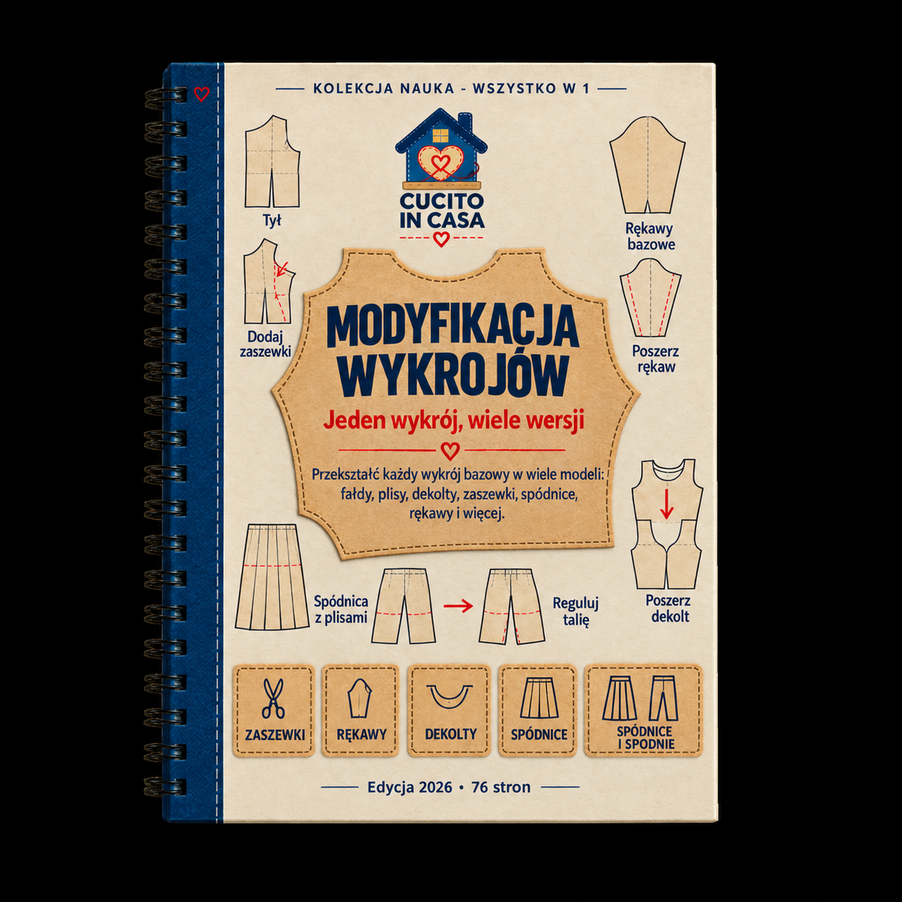

Bonus 3 z 5
Modyfikacja Wykrojów
Jeden wykrój, wiele wersji: długości, dekolty, rękawy, zaszewki i dopasowanie do twoich miar lub miar twojej klientki.

Biblia Wykrojów Krawiectwa
Spis treści
- 1 · Dlaczego modyfikować, a nie kupować nowy wykrój3
- 2 · Narzędzia i przygotowanie do modyfikacji6
- 3 · Modyfikacje długości10
- 4 · Modyfikacje dekoltu18
- 5 · Modyfikacje rękawów28
- 6 · Manipulacja zaszewkami38
- 7 · Korekty dopasowania46
- 8 · Modyfikacje linii talii56
- 9 · Modyfikacje kołnierzy i stóek61
- 10 · Dodawanie kieszeni67
- 11 · Łączenie modyfikacji71
- 12 · Tabele szybkiego odniesienia74
- Arkusz planowania modyfikacji78
- Następny krok79
Rozdział 1
Dlaczego modyfikować, a nie kupować nowy wykrój
Zrozumiesz, dlaczego umiejętność modyfikacji jednego bazowego wykroju daje ci więcej możliwości niż setki gotowych szablonów.
Każdy wykrój to punkt wyjścia, nie gotowy produkt. Opanowanie modyfikacji oznacza, że z jednego dobrze dopasowanego bloku bazowego stworzysz dziesiątki różnych projektów — bez kupowania kolejnych wykrojów i bez zaczynania od zera.
Jeden blok, nieskończone możliwości
Wyobraź sobie, że masz jeden idealnie dopasowany wykrój bluzki. Z tego jednego wykroju możesz stworzyć:
- Bluzkę z dekoltem w serek, okrągłym, łódkowym lub w kształcie serca
- Wersję z rękawami puf, dzwonkowymi, raglanowymi lub bez rękawów
- Wariant krótki do talii, standardowy do bioder lub wydłużony do kolan jako tunikę
- Model z zaszewkami piersiowymi, marszczeniami, zakładkami lub cięciami modelującymi
- Dopasowanie na większy biust, węższe ramiona, szerszy tułów lub krótszą sylwetkę
To nie jest teoria — to dokładnie to, co robią profesjonalne krawcowe i projektantki na co dzień. Zamiast szukać idealnego wykroju na każdy projekt, modyfikują sprawdzony bazowy szablon.
Ekonomia modyfikacji
Kupowanie nowego wykroju na każdy projekt to nie tylko koszt finansowy — to przede wszystkim czas. Każdy nowy wykrój wymaga:
- Testowania rozmiaru — każdy producent wykrojów ma inne tabele rozmiarów. To, co u jednego jest rozmiarem 40, u drugiego może być 42 lub nawet 44.
- Szycia toile — pierwszy egzemplarz z taniego materiału, żeby sprawdzić dopasowanie. To minimum 2–3 godziny pracy.
- Korekty dopasowania — nowy wykrój prawie nigdy nie pasuje idealnie za pierwszym razem. Trzeba nanieść poprawki i uszyć drugi toile.
- Ponownego testowania — dopiero po drugiej lub trzeciej próbie masz wykrój, któremu możesz zaufać.
Modyfikując sprawdzony wykrój, pomijasz kroki 1–3, bo wiesz, że baza już dobrze leży. Twoja praca ogranicza się do samej zmiany projektowej.
Zasada 80/20 w krawiectwie
Większość krawcowych regularnie używa zaledwie 5–8 bazowych wykrojów i modyfikuje je na potrzeby każdego projektu. Opanuj modyfikację tych kilku bloków, a pokryjesz 80% swoich potrzeb krawieckich.
Kiedy modyfikacja, a kiedy nowy wykrój
| Sytuacja | Zalecenie | Dlaczego |
|---|
| Zmiana dekoltu w sprawdzonej bluzce | Modyfikacja | Baza się nie zmienia, modyfikujesz tylko górną część przodu |
| Dodanie rękawów do sukienki bez rękawów | Modyfikacja | Ramię wykroju pozostaje, dorabiasz tylko rękaw |
| Zmiana prostej spódnicy na spódnicę z klinami | Modyfikacja | Linia talii i bioder zostają, zmieniasz konstrukcję poniżej |
| Szycie marynarki, a masz tylko wykrój bluzki | Nowy wykrój | Marynarka wymaga innej konstrukcji: podszewka, poduszki, klapa |
| Szycie spodni, a masz tylko spódnicę | Nowy wykrój | Konstrukcja spodni opiera się na innych pomiarach i kształtach |
| Dopasowanie wykroju do innej sylwetki | Modyfikacja | Korekty dopasowania to klasyczna modyfikacja wykroju |
Czego nauczysz się w tym poradniku
Ten poradnik przeprowadzi cię przez wszystkie główne rodzaje modyfikacji, od najprostszych (zmiana długości) po zaawansowane (manipulacja zaszewkami i korekty na różne typy sylwetki). Każda modyfikacja jest opisana krok po kroku, z tabelami wymiarów i wskazówkami, które pomogą ci uniknąć typowych błędów.
Nie musisz czytać wszystkiego od deski do deski. Możesz traktować ten poradnik jako podręcznik referencyjny — znajdź modyfikację, która cię interesuje, i wykonaj ją zgodnie z instrukcją. Z czasem zaczniesz łączyć modyfikacje i tworzyć coraz bardziej złożone projekty z tego samego bazowego wykroju.
Zanim zaczniesz modyfikować
Upewnij się, że twój bazowy wykrój jest dobrze dopasowany. Modyfikacja źle dopasowanego wykroju to podwójne kłopoty — najpierw musisz naprawić dopasowanie, a dopiero potem wprowadzać zmiany projektowe. Jeśli twój bazowy blok nie leży dobrze, wróć do bonusu „Podstawy Modelowania" i dopracuj go.
Rozdział 2
Narzędzia i przygotowanie do modyfikacji
Przygotujesz stanowisko pracy i poznasz narzędzia niezbędne do precyzyjnej modyfikacji wykrojów.
Modyfikacja wykrojów wymaga kilku dodatkowych narzędzi poza standardowym zestawem krawieckim. Dobra organizacja stanowiska pracy sprawi, że każda zmiana będzie szybsza i dokładniejsza.
Narzędzia podstawowe
| Narzędzie | Do czego służy | Na co zwrócić uwagę |
|---|
| Papier do wykrojów (biały, gładki) | Rysowanie nowych elementów i kopii roboczych | Rolka 90 cm szerokości jest najwygodniejsza; papier pakowy też się sprawdza |
| Papier kalkowy (przezroczysty) | Odrysowywanie części wykroju bez niszczenia oryginału | Szerokość minimum 60 cm; dostępny w rolkach w sklepach papierniczych |
| Ołówek mechaniczny 0,5 mm | Precyzyjne linie i oznaczenia | Wkłady HB lub H — miękkie (B) rozmazują się na papierze wykrojowym |
| Długa linijka metalowa (60 cm lub więcej) | Proste linie i pomiary | Metalowa nie odkształca się jak plastikowa; przydatna też do cięcia |
| Krzywik krawiecki (zestaw) | Rysowanie płynnych krzywych — dekolty, pachy, biodra | Minimum trzy: mały (dekolty), średni (pachy), duży (biodra i boki) |
| Elastyczna krzywica (leniwa krzywa) | Łączenie punktów w płynne krzywe dowolnego kształtu | Gumowy rdzeń ze stalowym prętem — utrzymuje narzucony kształt |
| Taśma klejąca (wąska, papierowa) | Łączenie części wykroju, dodawanie pasków papieru | Taśma malarska (masking tape) — łatwo się odkleja bez rozrywania papieru |
| Nożyczki do papieru | Cięcie wykrojów papierowych | Nigdy nie tnij papieru nożyczkami krawieckimi — to je tępi |
| Kółko krawieckie z kredowym wkładem | Przenoszenie oznaczeń przez kilka warstw papieru | Wkład kredowy zostawia ślad na papierze pod spodem |
| Centymetr krawiecki | Mierzenie krzywych linii i wymiarów ciała | Sprawdź, czy nie jest rozciągnięty — porównaj z linijką metalową |
Narzędzia dodatkowe (przydatne, ale nieobowiązkowe)
Manekin krawiecki
Regulowany manekin w twoim rozmiarze (lub rozmiarze klientki) pozwala sprawdzić modyfikację na bryle 3D zanim przetniesz tkaninę. Szczególnie przydatny przy korektach dopasowania i manipulacji zaszewkami.
Mata do cięcia A1
Samoregenerująca mata z centymetrową siatką. Chroni stół, ułatwia pomiary i pozwala ciąć nożem rotacyjnym. Rozmiar A1 (60 × 90 cm) wystarcza do większości elementów.
Nóż rotacyjny
Szybsze i dokładniejsze cięcie niż nożyczkami, szczególnie na prostych liniach. Wymaga maty do cięcia. Ostrze 45 mm to najbardziej uniwersalny rozmiar.
Cyrkiel krawiecki
Rysowanie łuków o dużym promieniu (dolne krawędzie spódnic, linie kloszów). Można zastąpić taśmą z ołówkiem przypiętą pinezką w punkcie obrotu.
Przygotowanie wykroju do modyfikacji
- Zrób kopię roboczą — nigdy nie modyfikuj oryginalnego wykroju. Odrysuj potrzebne elementy na papier kalkowy lub zwykły papier, przenosząc wszystkie oznaczenia: linie nitki osnowy, zaszewki, nacięcia, punkty dopasowania.
- Sprawdź linię nitki osnowy — upewnij się, że strzałka nitki osnowy jest narysowana na każdym elemencie. Bez niej nie ułożysz wykroju prawidłowo na tkaninie.
- Sprawdź zapasy na szwy — ustal, czy twój wykrój zawiera zapasy na szwy, czy nie. Ta informacja jest kluczowa przy modyfikacji — dodawanie lub zmiana dekoltów bez zapasów daje inne wymiary niż z zapasami.
- Sprawdź zgodność elementów — przyłóż do siebie elementy, które będą zszywane: bok przodu do boku tyłu, ramię przodu do ramienia tyłu, rękaw do otworu na rękaw. Linie muszą się zgadzać co do długości.
- Oznacz linię talii, bioder i piersi — jeśli nie są zaznaczone, odmierz je od karku lub ramienia zgodnie z tabelą wymiarów i narysuj poziome linie pomocnicze. Będą ci potrzebne przy wielu modyfikacjach.
- Przygotuj dodatkowy papier — przy wielu modyfikacjach trzeba dostawić papier do krawędzi wykroju. Przytnij paski o szerokości 8–10 cm i miej je pod ręką.
Zasada kopiowania
Zawsze pracuj na kopii. Oryginał trzymaj w teczce lub kopercie opisanej nazwą wykroju i datą. Jeśli modyfikacja nie wyjdzie, wrócisz do punktu wyjścia bez straty czasu na ponowne odrysowywanie.
Oznaczenia na zmodyfikowanym wykroju
Po każdej modyfikacji nanieś na wykrój następujące informacje:
Lista oznaczeń
- Nazwa elementu (np. „Przód — wersja z dekoltem V")
- Data modyfikacji
- Rozmiar bazowy i zastosowane korekty
- Linia nitki osnowy (strzałka)
- Kierunek metrażu (strzałka „góra")
- Oznaczenie złożenia (jeśli element jest na złożeniu: linia z oznaczeniem „NA ZŁOŻENIU")
- Nacięcia i punkty dopasowania
- Informacja o zapasach na szwy (np. „+1 cm zapas" lub „bez zapasu")
- Liczba elementów do wycięcia (np. „wyciąć 2×" lub „wyciąć 2× lustrzanie")
Organizacja zmodyfikowanych wykrojów
Każdy zmodyfikowany wykrój przechowuj w osobnej kopercie lub teczce. Na kopercie zapisz:
- Nazwę projektu (np. „Bluzka z dekoltem V, rękawy dzwonkowe")
- Rozmiar bazowy i listę zastosowanych modyfikacji
- Datę ostatniej modyfikacji
- Wynik testu (czy uszyłaś toile, czy wyszło dobrze)
To pozwoli ci szybko wrócić do sprawdzonych modyfikacji i nie powtarzać pracy.
Kolejność modyfikacji ma znaczenie
Jeśli planujesz kilka modyfikacji naraz (np. zmianę dekoltu i dodanie rękawów), zawsze zaczynaj od modyfikacji tułowia (zaszewki, dopasowanie), potem dekolt, potem rękawy, a na końcu długość. Odwrotna kolejność może sprawić, że wcześniejsze zmiany trzeba będzie powtórzyć.
Rozdział 3
Modyfikacje długości
Nauczysz się skracać i wydłużać spódnice, sukienki, spodnie i rękawy, zachowując prawidłowe proporcje wykroju.
Zmiana długości to najprostsza i najczęstsza modyfikacja wykroju. Wydaje się banalna — wystarczy odciąć lub dostawić — ale nieprawidłowe wykonanie zmienia proporcje wykroju, kształt dolnej krawędzi i dopasowanie w biodrach lub kolanach.
Zasada linii modyfikacji
Każda zmiana długości powinna być wykonywana na linii modyfikacji, a nie na dolnej krawędzi. Linia modyfikacji to pozioma linia narysowana prostopadle do nitki osnowy, umieszczona w miejscu, które nie zaburzy kluczowych punktów wykroju.
| Element odzieży | Miejsce linii modyfikacji | Dlaczego tutaj |
|---|
| Spódnica prosta | W połowie między biodrem a dolną krawędzią | Nie zmienia dopasowania w biodrach |
| Spódnica kloszowa | W połowie między biodrem a dolną krawędzią | Zachowuje kąt klosza |
| Sukienka — tułów | Między linią piersi a linią talii | Nie zmienia dopasowania w ramionach ani w biodrach |
| Sukienka — dół | W połowie między biodrem a dolną krawędzią | Jak w spódnicy |
| Spodnie — udo | W połowie między kroczem a kolanem | Nie zmienia dopasowania w kroku ani kształtu kolana |
| Spodnie — łydka | W połowie między kolanem a dolną krawędzią | Nie zmienia kształtu kolana |
| Rękaw | W połowie między pachą a łokciem | Nie zmienia główki rękawa ani dopasowania łokcia |
Skracanie na linii modyfikacji
- Narysuj linię modyfikacji — prostopadłą do nitki osnowy, w miejscu wskazanym w tabeli powyżej.
- Narysuj drugą linię równoległą — w odległości równej wartości skrócenia. Jeśli skracasz o 4 cm, narysuj drugą linię 4 cm powyżej pierwszej.
- Złóż wykrój — zgraj obie linie, przygniatając fałdę. Przyklej taśmą klejącą.
- Wyrównaj boczne krawędzie — po złożeniu boki mogą nie zgadzać się ze sobą. Dorysuj płynną linię łączącą krawędź nad fałdą z krawędzią pod fałdą.
- Sprawdź długość boku — zmierz centymetrem nową długość bocznego szwa i porównaj ją z odpowiadającym elementem (przód z tyłem). Obie powinny być równe.
Wydłużanie na linii modyfikacji
- Narysuj linię modyfikacji — w tym samym miejscu co przy skracaniu.
- Przetnij wykrój na tej linii — nożyczkami do papieru, dokładnie na linii.
- Podłóż pasek papieru — szerszy niż wykrój i dłuższy niż wartość wydłużenia o 4 cm z każdej strony.
- Rozsuń części — odsuń dolną część od górnej o żądaną wartość wydłużenia, dbając o zachowanie równoległości i prostopadłości do nitki osnowy. Przyklej obie części do paska papieru.
- Dorysuj boki — połącz boczne krawędzie górnej i dolnej części płynną, prostą linią.
- Dorysuj nitkę osnowy — przedłuż strzałkę nitki osnowy przez dodany pasek.
Kontrola długości boku
Po każdej modyfikacji długości mierz bok przodu i bok tyłu. Jeśli różnią się o więcej niż 2 mm, wyrównaj je — inaczej szew boczny będzie się wykrzywiał.
Standardowe długości — spódnice
| Nazwa długości | Orientacyjna odległość od talii | Kończy się… |
|---|
| Mini | 40–45 cm | W połowie uda |
| Nad kolano | 50–55 cm | 5 cm nad kolanem |
| Do kolana | 58–62 cm | Na rzepce kolanowej |
| Za kolano (midi krótka) | 65–70 cm | 5–10 cm za kolanem |
| Midi | 75–85 cm | W połowie łydki |
| Maxi (do kostki) | 95–105 cm | Na kostce |
| Do podłogi | 105–115 cm | 1–2 cm nad podłogą |
Wartości orientacyjne dla wzrostu 165–170 cm. Dla innego wzrostu dodaj lub odejmij różnicę proporcjonalnie.
Standardowe długości — sukienki
| Styl sukienki | Typowa długość od ramienia | Uwagi |
|---|
| Tunika (do noszenia ze spodniami) | 70–80 cm | Zakrywa biodra, nie kwalifikuje się jako samodzielna sukienka |
| Sukienka koktajlowa | 90–100 cm | Do kolana lub lekko nad |
| Sukienka biurowa | 100–110 cm | Do kolana lub lekko za |
| Sukienka midi | 115–125 cm | W połowie łydki |
| Sukienka wieczorowa maxi | 140–155 cm | Do podłogi z uwzględnieniem obcasów |
Standardowe długości — spodnie
| Typ spodni | Orientacyjna długość od talii (szew boczny) | Dolna krawędź |
|---|
| Szorty | 35–45 cm | W połowie uda lub wyżej |
| Bermudy | 55–65 cm | Do kolana lub lekko nad |
| Capri (rybaczki) | 80–90 cm | W połowie łydki |
| 7/8 | 90–95 cm | Nad kostką, odsłania ją |
| Pełna długość | 100–110 cm | Na czubku buta, lekko „łamie się" z przodu |
Standardowe długości — rękawy
| Typ rękawa | Orientacyjna długość od ramienia | Kończy się… |
|---|
| Rękaw cap (naramienny) | 5–8 cm | Zakrywa sam czubek ramienia |
| Krótki rękaw | 15–20 cm | W połowie bicepsa |
| Do łokcia | 30–35 cm | Na łokciu lub tuż pod |
| Trzy czwarte (3/4) | 40–45 cm | W połowie przedramienia |
| Długi rękaw | 55–62 cm | Na nadgarstku, zakrywa kość nadgarstka |
Modyfikacja długości spódnicy kloszowej
Spódnice kloszowe wymagają specjalnego podejścia, ponieważ dolna krawędź jest krzywa (łuk), a nie prosta. Skrócenie lub wydłużenie na prostej linii modyfikacji zmieni kąt klosza.
- Narysuj linię modyfikacji — jako łuk równoległy do dolnej krawędzi, w połowie między biodrem a dołem.
- Przy skracaniu — narysuj drugi łuk równoległy, bliżej dolnej krawędzi, w odległości równej wartości skrócenia. Złóż wykrój, zgrywając oba łuki.
- Przy wydłużaniu — przetnij na łuku modyfikacji i rozsuń części, zachowując stały odstęp na całej szerokości. Przyklej pasek papieru i dorysuj boki jako proste linie łączące górę z dołem.
- Przerysuj dolną krawędź — użyj cyrkla lub elastycznej krzywicy, żeby nowa dolna krawędź była łukiem o jednakowym promieniu na całej szerokości.
Nie skracaj kloszów na dolnej krawędzi
Odcinanie kilku centymetrów od dołu spódnicy kloszowej zmienia szerokość dołu i proporcje klosza. Spódnica, która miała być „kloszowa i zwiewna", stanie się węższa i sztywniejsza w ruchu. Zawsze skracaj na linii modyfikacji.
Modyfikacja długości spodni — dwie linie
Spodnie modyfikujemy za pomocą dwóch linii modyfikacji: jednej na udzie (między kroczem a kolanem) i jednej na łydce (między kolanem a dolną krawędzią). To dlatego, że zmiana tylko na jednej linii zaburza proporcje kolana.
- Oblicz podział — jeśli musisz skrócić spodnie o 6 cm, podziel zmianę: 3 cm na linii uda i 3 cm na linii łydki.
- Wykonaj modyfikację na linii uda — złóż lub rozetnij, jak opisano wyżej.
- Wykonaj modyfikację na linii łydki — tym samym sposobem.
- Sprawdź linię kolana — powinna nadal być na wysokości rzeczywistego kolana. Jeśli się przesunęła, skoryguj proporcje podziału.
Jak zmierzyć potrzebną zmianę długości
Zmierz pożądaną długość gotowego ubrania (np. od talii do kolana). Zmierz długość wykroju (od talii do dolnej krawędzi, nie licząc zapasu na podgięcie). Różnica to wartość modyfikacji. Pamiętaj: zapas na podgięcie (zwykle 3–4 cm) nie jest częścią długości gotowej — nie odejmuj go od modyfikacji.
Kontrola po modyfikacji długości
- Linia nitki osnowy jest ciągła i prosta na całym elemencie
- Długość bocznego szwa przodu = długość bocznego szwa tyłu
- Dolna krawędź jest płynna (bez załamań w miejscu modyfikacji)
- Linia kolana (w spodniach) jest na właściwej wysokości
- Łuk dolnej krawędzi (w kloszach) ma stały promień
- Wszystkie oznaczenia (nacięcia, punkty dopasowania) zostały przeniesione
Rozdział 4
Modyfikacje dekoltu
Poznasz 12 typów dekoltów i nauczysz się rysować każdy z nich na bazowym wykroju, zachowując prawidłowe dopasowanie ramion i szew barkowy.
Zmiana dekoltu to jedna z najpopularniejszych modyfikacji, bo całkowicie zmienia charakter ubrania. Ten sam tułów z dekoltem łódkowym wygląda elegancko, z dekoltem V — seksownie, a z dekoltem okrągłym — sportowo. Kluczem jest precyzyjne rysowanie nowego kształtu i prawidłowe obliczenie obłożenia lub stójki.
Anatomia dekoltu na wykroju
Dekolt na wykroju definiowany jest przez dwa punkty: punkt barkowy (gdzie dekolt zaczyna się na ramieniu) i punkt środkowy (gdzie dekolt dochodzi do linii środka przodu lub tyłu). Każdy typ dekoltu to inna krzywa łącząca te dwa punkty.
Ważne pojęcia:
- Głębokość dekoltu — odległość od linii ramienia w dół, mierzona na linii środka przodu
- Szerokość dekoltu — odległość od linii środka przodu do punktu barkowego, mierzona na linii ramienia
- Punkt barkowy — punkt na szwie barkowym, od którego zaczyna się dekolt; zmiana jego pozycji poszerza lub zwęża dekolt
Nie pogłębiaj tyłu za bardzo
Głęboki dekolt na plecach wymaga dodatkowego podparcia — ramiączek, wstawki siatkowej lub gumki. Bez tego tył będzie odstawał i ciągnął przód do góry. Bezpieczna głębokość tyłu to maksymalnie 10–12 cm od szyjnego punktu karku.
Tabela 12 typów dekoltów
| Nr | Typ dekoltu | Charakterystyka | Najlepiej do |
|---|
| 1 | Okrągły (klasyczny) | Łagodna krzywa od ramienia do środka przodu, głębokość 7–10 cm | T-shirty, bluzki codzienne, sukienki sportowe |
| 2 | Dekolt V | Proste linie od ramienia schodzące się w kształt litery V na środku przodu | Bluzki wizytowe, sukienki wieczorowe, optyczne wydłużanie szyi |
| 3 | Łódkowy (boat neck) | Szeroki, płytki łuk biegnący blisko linii ramion | Bluzki eleganckie, sukienki koktajlowe, optyczne poszerzanie ramion |
| 4 | Kwadratowy | Pozioma linia na piersi połączona prostymi liniami z ramionami | Gorsety, sukienki letnie, bluzki w stylu renesansowym |
| 5 | Sercowy (sweetheart) | Dwa łuki imitujące górną część serca, z zagłębieniem na środku | Sukienki wieczorowe, suknie ślubne, gorsety |
| 6 | Karo (diamond) | Kształt rombu — wąski na ramionach, szerokie wycięcie pośrodku | Bluzki wieczorowe, detale w sukienkach |
| 7 | Z kluczem (keyhole) | Okrągły lub V z owalnym wycięciem pod szyją zamykanym guziczkiem lub wiązaniem | Bluzki eleganckie, bluzki boho |
| 8 | Halter (za szyję) | Ramiączka idą za szyję, plecy odsłonięte | Sukienki letnie, topy na plażę, sukienki wieczorowe |
| 9 | Na jedno ramię (asymetryczny) | Jedno ramię zakryte, drugie odsłonięte | Sukienki wieczorowe, topy imprezowe |
| 10 | Bez ramiączek (bandeau) | Prosta linia biegnąca przez pierś, bez ramion | Sukienki wieczorowe, topy letnie (wymaga fiszbinów lub elastycznego materiału) |
| 11 | Cowl (wodospad) | Luźna draperia opadająca z szyi, tworząca fałdy na przodzie | Bluzki eleganckie, sukienki jersey |
| 12 | Surplice (kopertowy) | Dwie poły przodu zachodzą na siebie, tworząc dekolt V | Sukienki kopertowe, bluzki dla karmiących, wizytowe |
Dekolt okrągły — krok po kroku
- Odmierz głębokość — od szyjnego punktu barkowego odmierz w dół na linii środka przodu pożądaną głębokość (np. 8 cm dla klasycznego, 12 cm dla pogłębionego).
- Odmierz szerokość — od linii środka przodu odmierz na linii ramienia pożądaną szerokość (np. 7 cm dla standardowego).
- Zaznacz punkt pomocniczy — w rogu między punktem głębokości a punktem szerokości, pod kątem 45°, zaznacz punkt w odległości 2–3 cm od hipotetycznego rogu prostokąta.
- Narysuj krzywą — używając krzywika krawieckiego, narysuj płynny łuk od punktu barkowego przez punkt pomocniczy do punktu na środku przodu. Krzywa powinna być prostopadła do linii środka przodu w punkcie, gdzie ją spotyka.
- Powtórz dla tyłu — tył ma zazwyczaj płytszy dekolt: głębokość 2–3 cm, szerokość taka sama jak przodu.
Prostopadłość na środku
Linia dekoltu musi spotykać linię środka przodu pod kątem prostym (90°). Jeśli tego nie zachowasz, po rozłożeniu elementu (wyciętego na złożeniu) dekolt będzie miał szpic lub wgłębienie na środku zamiast gładkiej krzywej.
Dekolt V — krok po kroku
- Odmierz głębokość V — od szyjnego punktu barkowego odmierz na linii środka przodu pożądaną głębokość. Płytkie V: 10–12 cm. Średnie V: 15–18 cm. Głębokie V: 20–25 cm (do linii piersi lub poniżej).
- Zaznacz punkt barkowy — zdecyduj, jak szeroki ma być dekolt na ramionach. Standardowo: 6–8 cm od linii środka przodu.
- Narysuj prostą linię — od punktu barkowego do punktu V na środku przodu. Użyj linijki.
- Zaokrąglij wierzchołek V — ostry kąt V jest trudny do uszycia i źle leży. Zaokrąglij go małym łukiem o promieniu 1–1,5 cm.
- Sprawdź kąt na środku — linia V powinna spotykać linię środka przodu pod kątem nie mniejszym niż 30°. Przy ostrzejszym kącie materiał będzie się zawijał.
Dekolt łódkowy — krok po kroku
- Odmierz głębokość — dekolt łódkowy jest płytki: 2–4 cm od szyjnego punktu barkowego na linii środka przodu.
- Odmierz szerokość — punkt barkowy przesuń w stronę ramienia: 3–5 cm od szyjnego punktu barkowego w kierunku końca ramienia. To poszerzy dekolt.
- Narysuj łagodny łuk — od nowego punktu barkowego do punktu na środku przodu. Krzywa jest bardzo płytka — prawie pozioma.
- Tył: taka sama głębokość — dekolt łódkowy jest zazwyczaj symetryczny: przód i tył mają tę samą głębokość i szerokość.
- Obłożenie — dekolt łódkowy wykańcza się wąskim obłożeniem (3–4 cm) lub lamówką. Szerszy obłożony pasek mógłby wystawać na szerokich ramionach.
Dekolt kwadratowy — krok po kroku
- Odmierz głębokość — 10–15 cm od szyjnego punktu barkowego w dół na linii środka przodu.
- Odmierz szerokość — 8–12 cm od linii środka przodu na linii ramienia.
- Narysuj linię poziomą — od punktu głębokości narysuj prostą poziomą linię w kierunku boku (długość = szerokość dekoltu).
- Narysuj linię pionową — od końca linii poziomej poprowadź prostą pionową w górę do linii ramienia.
- Zaokrąglij rogi — ostre rogi kwadratowego dekoltu są trudne do uszycia. Zaokrąglij je łukiem o promieniu 1,5–2 cm.
Dekolt sercowy (sweetheart) — krok po kroku
- Narysuj bazowy dekolt kwadratowy — głębokość 12–16 cm, szerokość 10–12 cm.
- Zaznacz punkt zagłębienia — na linii środka przodu, 2–3 cm powyżej dolnej krawędzi kwadratowego dekoltu.
- Zaznacz szczyty łuków — po obu stronach środka, na linii dolnej krawędzi kwadratowego dekoltu, odmierz 4–5 cm od linii środka. Te punkty będą najwyższymi punktami „serc".
- Narysuj łuki — od punktu barkowego narysuj łagodną krzywą schodzącą do szczytu łuku, a następnie krzywa opadającą do punktu zagłębienia na środku. Użyj krzywika.
- Sprawdź symetrię — złóż wykrój na linii środka. Obie strony serca muszą się pokrywać.
- Podparcie — dekolt sercowy wymaga fiszbinów lub elastycznej wstawki, żeby łuki utrzymały kształt. Zaplanuj miejsce na fiszbiny w zapasach na szwy.
Dekolt kopertowy (surplice) — krok po kroku
- Skopiuj element przodu — będziesz potrzebować dwa elementy przodu (lewy i prawy), a nie jeden na złożeniu.
- Zaznacz linię zakładki — od punktu barkowego narysuj ukośną linię do punktu na linii talii (lub wyżej), 5–8 cm poza linią środka przodu. To jest krawędź zakładki.
- Dodaj zapas na zakładkę — poza linią zakładki dodaj 3–5 cm materiału, który będzie zachodził pod drugą połą.
- Narysuj lustrzane odbicie — drugi element przodu jest lustrzanym odbiciem pierwszego.
- Zaplanuj zamknięcie — kopertowy dekolt zamyka się na boku (szew boczny) lub wiązaniem. Zaznacz punkt zamknięcia na wykroju.
Dekolt z otworem (keyhole) — krok po kroku
- Narysuj bazowy dekolt — okrągły lub niewielki V, głębokość 5–7 cm.
- Zaznacz otwór — na linii środka przodu, 3–6 cm poniżej dolnej krawędzi dekoltu, zaznacz dolną krawędź otworu.
- Narysuj kształt otworu — owal lub łezka o szerokości 3–5 cm i długości wynikającej z punktu 2.
- Zaplanuj zamknięcie — u góry otworu umieść pętelkę z guziczkiem, haczyk lub wiązanie tasiemkowe.
- Dodaj obłożenie — otwór keyhole wymaga obłożenia powtarzającego jego kształt, szerokości 2–3 cm.
Dekolt halter — krok po kroku
- Wyeliminuj ramiona — na wykroju przodu zaznacz punkt na szwie barkowym, 2–3 cm od szyi. Punkt na szwie bocznym zaznacz na pasze lub 5 cm poniżej pachy.
- Narysuj linię pachy — od nowego punktu bocznego poprowadź krzywą do pachy (identyczną jak otwór na rękaw, ale wyższą).
- Narysuj ramiączko — od punktu na szwie barkowym narysuj pasek o szerokości 2–4 cm biegnący do karku. Ramiączka zszywasz lub wiążesz za szyją.
- Dostosuj tył — tył halterki jest zwykle głęboko wycięty (do linii talii) lub odkryty, z wąskim paskiem na plecach.
- Dodaj podparcie — bez ramion przód musi być stabilizowany elastycznym paskiem, gumiłką pod biustem lub fiszbinami.
Obłożenie dekoltu
Każdy nowy dekolt wymaga obłożenia (facing) — elementu, który wykańcza krawędź od wewnątrz. Obłożenie rysujemy na podstawie gotowego dekoltu:
- Odrysuj kształt dekoltu — nałóż na nowy papier element z narysowanym dekoltem i odrysuj linię dekoltu, linię ramienia i linię środka przodu (lub tyłu).
- Odmierz szerokość obłożenia — standardowo 5–6 cm od krawędzi dekoltu w głąb wykroju. Przy dekoltach kopertowych i sercowych: 4 cm.
- Narysuj wewnętrzną krawędź — równoległa krzywa do dekoltu, w odległości równej szerokości obłożenia.
- Przenieś oznaczenia — linia środka, linia ramienia, linia nitki osnowy (równoległa do linii środka).
- Dodaj zapas na szwy — 1 cm dookoła obłożenia (na krawędzi dekoltu, na ramionach, na środku).
Podklejka na obłożeniu
Obłożenie dekoltu zawsze podklejaj termiczną wkładką krawiecką. Bez niej obłożenie się zwija, odwraca na prawo i wychodzi spod materiału. Wkładkę przycinaj o 3 mm mniejszą niż obłożenie, żeby nie wystawała na krawędzi.
Pułapka symetrii
Jeśli modyfikujesz dekolt na wykroju ciętym na złożeniu, rysuj nowy kształt tylko na jednej połowie (od linii środka). Po wycięciu i rozłożeniu dekolt będzie symetryczny. Rysowanie „na oko" na rozłożonym wykroju niemal zawsze daje nierówny dekolt.
Tabela głębokości i szerokości dekoltów
| Typ dekoltu | Głębokość przodu | Szerokość (od środka) | Głębokość tyłu |
|---|
| Okrągły standardowy | 7–8 cm | 6–7 cm | 2–3 cm |
| Okrągły pogłębiony | 10–14 cm | 7–9 cm | 3–4 cm |
| V płytki | 10–12 cm | 6–7 cm | 2–3 cm |
| V średni | 15–18 cm | 7–8 cm | 2–3 cm |
| V głęboki | 20–25 cm | 7–9 cm | 3–4 cm |
| Łódkowy | 2–4 cm | 10–14 cm | 2–4 cm |
| Kwadratowy | 10–15 cm | 8–12 cm | 5–8 cm |
| Sercowy | 12–16 cm | 10–12 cm | 6–8 cm |
| Kopertowy | 15–25 cm | cała szerokość | 2–3 cm |
| Keyhole | 5–7 cm (dekolt) + 3–8 cm (otwór) | 6–7 cm | 2–3 cm |
| Halter | 10–20 cm | 2–4 cm (ramiączko) | do talii |
| Bez ramiączek | prosta linia na piersi | cała szerokość | prosta linia na plecach |
Kontrola po modyfikacji dekoltu
- Kształt dekoltu jest symetryczny (sprawdź na złożeniu)
- Linia dekoltu spotyka linię środka przodu pod kątem prostym
- Szew barkowy przodu i tyłu mają tę samą długość
- Obłożenie powtarza dokładnie kształt nowego dekoltu
- Obłożenie ma zapasy na szwy
- Linia nitki osnowy jest zaznaczona na obłożeniu
- Głębokość tyłu nie przekracza 12 cm (chyba że zaplanowano podparcie)
Rozdział 5
Modyfikacje rękawów
Poznasz 12 typów rękawów i nauczysz się konstruować każdy z nich na bazie prostego rękawa wstawianego.
Rękaw jest jednym z najbardziej widocznych elementów odzieży — natychmiast zmienia styl, od sportowego po elegancki. Każdy typ rękawa możesz skonstruować na bazie prostego rękawa wstawianego (wszytego w otwór pachowy), modyfikując jego kształt, szerokość i długość.
Bazowy rękaw wstawiany
Bazowy rękaw wstawiany to punkt wyjścia dla wszystkich modyfikacji. Składa się z:
- Główki rękawa — krzywa na górze, która pasuje do otworu pachowego w tułowiu
- Linii bicepsa — najszersza część rękawa, na wysokości pachy
- Linii łokcia — zaszewka łokciowa lub krzywa, która daje miejsce na zgięcie łokcia
- Dolnej krawędzi — końcówka rękawa na nadgarstku (rękaw długi) lub wyżej
- Przedniego i tylnego szwa — biegnących od pachy do dolnej krawędzi
Obwód główki = obwód otworu pachowego + wkład na wpuszczenie
Obwód krzywej główki rękawa powinien być o 2,5–4 cm większy niż obwód otworu pachowego. Ta nadwyżka (ease) pozwala na swobodę ruchu i lekkie marszczenie główki. Przy modyfikacjach zawsze sprawdzaj, czy ta proporcja się zachowuje.
Tabela typów rękawów
| Nr | Typ rękawa | Charakterystyka | Poziom trudności |
|---|
| 1 | Cap (naramienny) | Bardzo krótki, zakrywa tylko czubek ramienia, szerokość 5–8 cm | Łatwy |
| 2 | Krótki prosty | Klasyczny krótki rękaw do połowy bicepsa, prosty lub lekko zwężany | Łatwy |
| 3 | Puf (bufiasty) | Marszczenie na główce i/lub na dolnej krawędzi, nadaje objętość | Średni |
| 4 | Dzwonkowy (bell) | Dopasowany na górze, rozszerzający się od łokcia w dół | Średni |
| 5 | Bishop (biskupi) | Szeroki i pełny od łokcia, ściągany na nadgarstku mankietem | Średni |
| 6 | Raglanowy | Szew biegnie od dekoltu do pachy, bez szwa barkowego | Średni–zaawansowany |
| 7 | Kimono | Rękaw wyciąty w jednym kawałku z tułowiem, bez oddzielnego szwa pachowego | Średni |
| 8 | Dolman (nietoperz) | Jak kimono, ale znacznie szerszy, opadający do talii | Średni |
| 9 | Pagoda (lejek) | Rozszerzający się od pachy, bez zwężania, kształt stożka | Łatwy |
| 10 | Juliette | Puf na główce, dopasowany od łokcia w dół | Średni–zaawansowany |
| 11 | Leg-of-mutton (gigot) | Bardzo obszerny na górze, ekstremalnie zwężany od łokcia | Zaawansowany |
| 12 | Tulipan | Dwie nakładające się warstwy materiału, kształt płatków tulipana | Średni |
Rękaw cap (naramienny) — krok po kroku
- Skopiuj górną część bazowego rękawa — od główki w dół odmierz 5–8 cm (to będzie długość rękawa cap).
- Narysuj dolną krawędź — łagodna krzywa biegnąca od przedniego szwa do tylnego szwa, 5–8 cm pod główką.
- Zachowaj kształt główki — główka cap jest identyczna z główką bazowego rękawa. Nie zmieniaj jej.
- Dodaj zapas na podgięcie — 1,5 cm na dolnej krawędzi, podgięcie będzie wąskie (podwójne na 0,75 cm).
- Sprawdź dopasowanie — obwód główki musi zgadzać się z otworem pachowym.
Rękaw puf (bufiasty) — krok po kroku
- Skopiuj bazowy rękaw w wybranej długości — puf może być krótki (do łokcia) lub długi (do nadgarstka).
- Przetnij wykrój pionowo — narysuj 3–5 równoległych linii od główki do dolnej krawędzi. Przetnij na tych liniach, ale nie do końca — zostaw 2 mm na główce, żeby elementy się nie rozdzieliły (metoda „wachlarza").
- Rozłóż na nowym papierze — rozsuń paski równomiernie, tworząc odstępy 2–4 cm (więcej = więcej objętości). Przyklej do papieru.
- Narysuj nową główkę — poprowadź płynną krzywą przez szczyty rozsunięych pasków. Będzie wyższa niż oryginalna — to normalne, ta dodatkowa wysokość tworzy bufkę.
- Narysuj nową dolną krawędź — jeśli chcesz puf ściągnięty na dole (np. gumką), narysuj płynną krzywą przez dolne końce pasków. Dolna krawędź będzie szersza niż w oryginale — nadmiar materiału tworzysz marszczeniem.
- Oblicz długość gumki lub mankietu — zmierz obwód ręki w miejscu dolnej krawędzi + 2 cm na komfort. Tyle powinna mieć gumka (w spoczynku) lub mankiet.
Marszczenie na główce vs. na dole
Puf marszczy się tam, gdzie dodajesz objętość. Jeśli rozetniesz od główki i rozwachlujesz na górze — główka się marszczy. Jeśli na dole — dół się marszczy. Jeśli na obu — cały rękaw jest bufiasty. Dla klasycznego pufu lat 80.: marszczenie na główce i ściągnięcie na dole.
Rękaw dzwonkowy (bell) — krok po kroku
- Skopiuj bazowy rękaw do pełnej długości — z główką, linią łokcia i dolną krawędzią.
- Zaznacz punkt rozszerzenia — na szwie przednim i tylnym, na wysokości łokcia. Od tego punktu rękaw się rozszerza.
- Przedłuż dolną krawędź — na przednim szwie dodaj 8–15 cm szerokości na dole (odmierz od oryginalnej krawędzi w bok). Na tylnym szwie dodaj tyle samo.
- Narysuj nowe szwy — od punktu na łokciu poprowadź prostą linię do nowego, poszerzonego punktu na dole. Powtórz z drugiej strony.
- Zaokrąglij dolną krawędź — narysuj łagodny łuk łączący oba dolne punkty. Krzywa jest wypukła w dół.
- Sprawdź proporcje — obwód dolnej krawędzi powinien być 1,5–2× obwód nadgarstka. Mniej = skromny dzwon, więcej = dramatyczny efekt.
Rękaw bishop (biskupi) — krok po kroku
- Skopiuj bazowy rękaw pełnej długości.
- Przetnij pionowo — 3 równoległe linie, jak przy pufie, ale tylko od łokcia w dół (górna część zostaje nienaruszona).
- Rozłóż dolną część — rozsuń paski o 3–5 cm każdy. Przyklej do papieru.
- Narysuj nową dolną krawędź — płynna krzywa przez rozsuniete punkty.
- Skonstruuj mankiet — pas materiału o wysokości 4–6 cm i obwodzie równym obwodowi nadgarstka + 4 cm (na zapięcie i komfort). Mankiet zamyka się guzikiem lub zatrzaskiem.
- Zmierz marszczenie — obwód dolnej krawędzi rękawa minus obwód mankietu = ilość materiału do zmarszczenia. Rozłóż marszczenie równomiernie.
Rękaw raglanowy — krok po kroku
Rękaw raglanowy sięga od dekoltu do nadgarstka jednym elementem, bez szwa barkowego. Wymaga modyfikacji zarówno rękawa, jak i tułowia.
- Na wykroju przodu tułowia — zaznacz punkt na dekolcie, 3–4 cm od szyjnego punktu barkowego. Zaznacz punkt na dolnej krawędzi otworu pachowego. Narysuj prostą lub lekko zakrzywioną linię łączącą te dwa punkty — to linia raglanowa przodu.
- Odetnij trójkąt ramienny przodu — wzdłuż linii raglanowej i szwa barkowego. Zachowaj ten element.
- Na wykroju tyłu — powtórz to samo: linia od dekoltu do pachy, odetnij trójkąt ramienny tyłu.
- Na bazowym rękawie — przetnij główkę na punkcie najwyższym (szczyt główki). Doklej trójkąt ramienny przodu do przedniego szwa rękawa, zgrajając linię pachową. Doklej trójkąt ramienny tyłu do tylnego szwa.
- Wygładź szwy — narysuj płynne krzywe łączące linię raglanową z resztą rękawa. Nie powinno być ostrych kątów.
- Dodaj oznaczenia — punkt dopasowania na szczycie rękawa (gdzie był szew barkowy) i nacięcia na liniach raglanowych.
Raglan i dekolt
Zmiana dekoltu na wykroju z rękawem raglanowym wymaga jednoczesnej modyfikacji rękawa, bo linia raglanowa zaczyna się na dekolcie. Zawsze modyfikuj dekolt przed konstrukcją raglanów.
Rękaw kimono — krok po kroku
- Połóż wykrój przodu i bazowy rękaw — na dużym papierze. Rękaw przyłóż do otworu pachowego: punkt główki rękawa na szew barkowy, dolna krawędź główki na dolny punkt pachy.
- Zamknij kąt pachy — obróć rękaw tak, żeby szew barkowy i oś rękawa tworzyły kąt 30–45° (mniejszy kąt = rękaw bardziej opuszczony, większy = bardziej uniesiony).
- Odrysuj zintegrowany element — tułów i rękaw jako jeden kontur. Linia pachy to łagodna krzywa łącząca bok tułowia z dolnym szwem rękawa.
- Dodaj klin pachowy (opcjonalnie) — jeśli kąt pachy jest ostry, rękaw będzie ciągnął i ograniczał ruch. Wstaw romboidalny klin pod pachą (8–12 cm), który daje dodatkowy materiał na ruch ramienia.
- Powtórz dla tyłu — ten sam proces z wykrojem tyłu.
Rękaw dolman (nietoperz) — krok po kroku
- Postępuj jak z kimono — ale ustaw kąt pachy na 15–25° (rękaw opada bardziej w dół).
- Powiększ obwód tułowia — rękaw dolman jest bardzo luźny od pachy do talii. Na boku tułowia dodaj 5–10 cm szerokości.
- Narysuj linię pachy — głęboka, łagodna krzywa biegnąca od boku tułowia (na talii lub biodrze) do dolnego szwa rękawa. Charakterystyczny kształt „skrzydła".
- Dolna krawędź rękawa — zwykle zwężana na nadgarstku, ale sam rękaw jest bardzo szeroki na górze. Mankiet lub gumka na nadgarstku.
Rękaw pagoda (lejek) — krok po kroku
- Skopiuj bazowy rękaw — do wybranej długości (zwykle do łokcia lub 3/4).
- Rozszerz dolną krawędź — na obu szwach (przód i tył) dodaj 5–12 cm na dole.
- Narysuj proste szwy — od pachy do poszerzonego dołu, proste linie (nie krzywe).
- Dolna krawędź — nie podginaj, tylko wykończ overlockiem lub lamówką. Pagoda ma „surowy" wygląd u dołu.
Rękaw Juliette — krok po kroku
- Skonstruuj puf na główce — zastosuj metodę rozcinania i rozkładania (jak w pufie), ale tylko na górnych 10–15 cm rękawa. Dodaj 2–4 cm rozstawu na każdym cięciu.
- Resztę rękawa zostaw dopasowaną — od łokcia w dół rękaw pozostaje wąski, jak w bazowym wykroju.
- Narysuj płynne przejście — krzywa łącząca bufiastą główkę z dopasowaną dolną częścią powinna być łagodna, bez nagłych zmian szerokości.
- Dodaj zaszewkę łokciową — dopasowany rękaw od łokcia wymaga zaszewki na łokciu, żeby się nie marszczył.
Rękaw gigot (leg-of-mutton) — krok po kroku
- Skonstruuj bardzo obszerną główkę — zastosuj metodę rozcinania z większymi rozstawami: 5–8 cm na każdym cięciu. Główka będzie bardzo wysoka i szeroka.
- Dodaj objętość do łokcia — kontynuuj rozstawy do linii łokcia, ale stopniowo zmniejszając (od 5 cm na główce do 1 cm na łokciu).
- Od łokcia w dół: ekstremalnie zwęź — rękaw od łokcia jest dopasowany jak rękawiczka. Szerokość na nadgarstku = obwód nadgarstka + 2 cm.
- Dodaj zamek — tak ciasny rękaw na dole wymaga zamka błyskawicznego lub rządu guziczków na wewnętrznym szwie, żeby można było go założyć.
- Podparcie główki — tak obszerny puf wymaga podparcia: wkładka barkowa, tiulowa wypełniaczka lub poduszeczka.
Rękaw tulipan — krok po kroku
- Skopiuj bazowy rękaw krótki — do połowy bicepsa.
- Podziel na dwie nakładające się warstwy — przednią i tylną. Każda warstwa jest szersza od połowy rękawa o 3–5 cm (to zakładka, dzięki której „płatki" na siebie nachodzą).
- Zaokrąglij dolne krawędzie — każdy „płatek" ma zaokrągloną dolną krawędź, jak płatek tulipana.
- Zszyj warstwy na główce — obie warstwy łączysz na górze (główka rękawa), a na dole się rozchodzą, tworząc otwór w kształcie tulipana.
Tabela wymiarów rękawów — obwody
| Punkt pomiaru | Rozmiar S (36) | Rozmiar M (38–40) | Rozmiar L (42–44) | Rozmiar XL (46–48) |
|---|
| Obwód bicepsa (na rękawiu) | 30–32 cm | 33–36 cm | 37–40 cm | 41–44 cm |
| Obwód łokcia | 25–27 cm | 28–30 cm | 31–33 cm | 34–36 cm |
| Obwód nadgarstka | 15–16 cm | 16–17 cm | 17–19 cm | 19–21 cm |
| Obwód otworu pachowego | 40–42 cm | 43–46 cm | 47–50 cm | 51–54 cm |
| Obwód główki rękawa (z nadwyżką) | 43–46 cm | 47–50 cm | 51–54 cm | 55–58 cm |
Wartości orientacyjne. Rzeczywiste wymiary zależą od modelu odzieży i pożądanego dopasowania (luźne/dopasowane).
Kontrola po modyfikacji rękawa
- Obwód główki = obwód otworu pachowego + 2,5–4 cm (nadwyżka)
- Linia nitki osnowy jest zaznaczona (równoległa do osi rękawa)
- Nacięcia na główce zgadzają się z nacięciami na otworze pachowym
- Szew przedni i tylny mają prawidłowe długości
- Dolna krawędź jest wykończona (podgięcie, mankiet, gumka lub lamówka)
- Przy pufie: obliczone marszczenie i długość gumki/mankietu
- Przy raglanie: trójkąty ramienne pasują do rękawa
- Przy kimono: klin pachowy jest zaplanowany (jeśli potrzebny)
Rozdział 6
Manipulacja zaszewkami
Nauczysz się przenosić, dzielić i przekształcać zaszewki w marszczenia, zakładki, cięcia modelujące i linie princess.
Zaszewka to trójkątny wycięty i zszyty fragment materiału, który nadaje płaskiemu wykrojowi trójwymiarowy kształt. Przenoszenie zaszewki z jednego miejsca na inne zmienia wygląd ubrania, nie zmieniając jego dopasowania. To jedna z najpotężniejszych technik w krawiectwie.
Punkt obrotu zaszewki
Wszystkie zaszewki na przodzie tułowia „wskazują" na ten sam punkt — punkt piersi (bust point, BP). To najwyższy punkt biustu. Niezależnie od tego, skąd zaczyna się zaszewka (od boku, od ramienia, od talii, od dekoltu), jej koniec zawsze mierzy w BP.
To oznacza, że możesz przenosić zaszewkę z dowolnego miejsca na dowolne inne — pod warunkiem, że kończy się 2–3 cm przed BP (nie dochodzi do samego punktu, żeby nie tworzyć szpica).
Metoda obrotowa (pivot method)
Najprostsza i najpopularniesza metoda przenoszenia zaszewek:
- Odrysuj element przodu — na nowy papier, ze wszystkimi oznaczeniami, łącznie z istniejącą zaszewką.
- Zaznacz punkt piersi (BP) — jeśli nie jest zaznaczony, odmierz go: od linii środka przodu odmierz połowę odległości między piersiami, a od ramienia odmierz długość przodu do piersi (z tabeli wymiarów).
- Zaznacz nowe miejsce zaszewki — na krawędzi wykroju, w miejscu, gdzie chcesz przenieść zaszewkę (np. na dekolcie, na szwie barkowym, na boku na talii).
- Narysuj linię od nowego miejsca do BP — prosta linia.
- Przetnij na tej linii — od krawędzi do BP (ale nie dalej).
- Zamknij starą zaszewkę — złóż wykrój tak, żeby ramiona starej zaszewki się zetkneły. Przyklej taśmą. Automatycznie otworzy się nowa zaszewka w miejscu cięcia.
- Narysuj nową zaszewkę — odrysuj kształt otworu, który się pojawił. To twoja nowa zaszewka.
- Wygładź krawędzie — po zamknięciu starej i otwarciu nowej zaszewki krawędzie mogą potrzebować wyrównania. Narysuj płynne krzywe.
Zaszewka nie musi być trójkątem
Po przeniesieniu zaszewki możesz ją przekształcić: w marszczenia (drobne fałdki), zakładki (duże fałdy), cięcie modelujące (szew zamiast zaszewki) lub gathers (rozłożone marszczenie). Techniki opisane są poniżej.
Możliwe pozycje zaszewki na przodzie tułowia
| Pozycja | Efekt wizualny | Kiedy stosować |
|---|
| Od boku (pod pachą) | Najpopularniejsza pozycja, dyskretna, łatwa do szycia | Bluzki codzienne, koszule, sukienki proste |
| Od szwa barkowego | Linia modelująca biegnie od ramienia w dół do piersi | Koszule męskie (adaptowane), żakiety klasyczne |
| Od dekoltu | Linia dekoltu jest przerwana — zaszewka biegnie od dekoltu do piersi | Sukienki wieczorowe, gorsety |
| Od szwa talii | Klasyczna zaszewka na talii, wertykalna, po obu stronach piersi | Dopasowane sukienki, bluzki wizytowe, żakiety |
| Od środka przodu | Zaszewka ukryta w linii guzików lub w cięciu środkowym | Koszule, żakiety z zapięciem pośrodku |
| Z pachwy (od otworu na rękaw) | Zaszewka biegnie od pachy do piersi — dyskretna, ukryta pod ramieniem | Żakiety, kurtki |
Dzielenie zaszewki na dwie
Jeśli zaszewka jest zbyt szeroka (powyżej 4 cm u podstawy), materiał marszczy się na szpicu. Rozwiązanie: podziel ją na dwie mniejsze.
- Zaznacz dwa nowe miejsca — np. zamiast jednej zaszewki bocznej, zaplanuj jedną od boku i jedną od talii.
- Narysuj linie od obu miejsc do BP.
- Przetnij na obu liniach — od krawędzi do BP.
- Zamknij oryginalną zaszewkę — zamykając ją w połowie, rozdzielisz jej objętość na dwa nowe otwory.
- Dostosuj proporcje — nie musisz dzielić 50/50. Możesz zamknąć 2/3 starej zaszewki (otwierając 2/3 nowej) i zostawić 1/3 w starym miejscu.
Przekształcanie zaszewki w marszczenie
- Przenieś zaszewkę — do miejsca, gdzie chcesz marszczenie (np. na dekolt, na linię talii).
- Nie rysuj zaszewki — zamiast tego zostawiasz otwarty trójkąt jako dodatkowy materiał.
- Wygładź krawędź — narysuj płynną krzywą przez otwór. Dodatkowy materiał będzie marszczony podczas szycia.
- Zaznacz na wykroju — „marszczenie od punktu X do punktu Y" i podaj długość odcinka, do którego marszczysz (np. „zmarszcz do 12 cm").
Przekształcanie zaszewki w zakładki
- Przenieś zaszewkę — w miejsce zakładki.
- Zaznacz kierunek zakładki — zakładka to fałda materiału ułożona w jednym kierunku (w dół, w bok). Zaznacz strzałką.
- Podziel objętość — jeśli chcesz dwie zakładki zamiast jednej, podziel zaszewkę na dwie (jak opisano wyżej).
- Zaznacz głębokość zakładki — głębokość = połowa szerokości zaszewki u podstawy. Np. zaszewka o szerokości 4 cm daje zakładkę o głębokości 2 cm.
Przekształcanie zaszewki w cięcie modelujące (princess seam)
Cięcie modelujące to szew, który zastępuje zaszewkę — biegnie od ramienia (lub pachy) przez punkt piersi do talii, dzieląc przód na dwa elementy: boczny i środkowy.
- Zaznacz linię cięcia — od szwa barkowego (4–6 cm od szyi) przez BP do talii. Linia powinna być łagodną krzywą, nie prostą.
- Zamknij istniejącą zaszewkę — złóż ramiona zaszewki.
- Przetnij na linii cięcia — z zamkniętą zaszewką. Po rozcięciu i otwarciu zaszewki dostajesz dwa elementy: środkowy (z dekoltem) i boczny (z pachą).
- Wygładź krzywe — krawędzie cięcia po otwarciu zaszewki nie będą gładkie. Dorysuj płynne krzywe krzywcami.
- Dodaj zapas na szwy — 1 cm na obu krawędziach cięcia, na obu elementach.
- Dodaj nacięcia dopasowania — na BP (punkt piersi) zaznacz nacięcie na obu elementach, żeby wiedzieć, gdzie je zgrać podczas szycia.
Princess od pachy vs. od ramienia
Cięcie od ramienia daje klasyczny, elegancki wygląd (żakiety, sukienki wizytowe). Cięcie od pachy jest bardziej sportowe i łatwiejsze do szycia (bo szew barkowy zostaje nienaruszony). Wybierz wariant, który pasuje do stylu projektu.
Zaszewki na tyle tułowia
Tył ma dwa typowe miejsca na zaszewki:
Zaszewka barkowa (tylna)
Biegnie od ramienia w dół, modelując łopatkę. Przenoszenie: od ramienia można przenieść na dekolt tyłu, na pachę lub na cięcie modelujące tyłu. Metoda obrotowa jest identyczna, ale punkt obrotu to najwyższy punkt łopatki (analogicznie do BP z przodu).
Zaszewka taliowa (tylna)
Wertykalny trójkąt na talii, modelujący krzywiznę pleców. Przenoszenie: rzadkie — ta zaszewka zwykle pozostaje na swoim miejscu. Można ją zastąpić cięciem modelującym tyłu.
Tabela odpowiedników zaszewek
| Zaszewka jako… | Daje efekt… | Zastosowanie |
|---|
| Trójkąt (klasyczna) | Precyzyjne dopasowanie, czysta linia | Koszule, żakiety, sukienki wizytowe |
| Marszczenie | Romantyczny, miękki, objętościowy | Bluzki boho, sukienki letnie, dekolt |
| Zakładki | Strukturalny, uporządkowany, geometryczny | Spódnice biurowe, bluzki minimalistyczne |
| Cięcie princess | Elegancki, modelujący sylwetkę, bez widocznych zaszewek | Sukienki wieczorowe, żakiety, gorsety |
| Tuck (drobna zakładka) | Delikatny, strukturalny, rzemieślniczy | Koszule nocne, bluzki vintage |
| Szew reliefowy | Sportowy, funkcjonalny | Kurtki, odzież sportowa, odzież robocza |
Nie usuwaj zaszewki bez zastępowania jej czymś
Zaszewka istnieje, bo ciało jest trójwymiarowe, a tkanina jest płaska. Jeśli usuniesz zaszewkę bez przeniesienia jej objętości w inne miejsce (marszczenie, zakładka, cięcie), ubranie nie będzie się dobrze układać — tkanina będzie fałdować się w przypadkowych miejscach.
Kontrola po manipulacji zaszewką
- Nowa zaszewka (lub jej odpowiednik) kończy się 2–3 cm przed punktem piersi
- Krawędzie wykroju po przeniesieniu są gładkie (wygładzone krzywcami)
- Suma objętości zaszewek jest taka sama jak w oryginale (nic nie zniknęło)
- Przy cięciu princess: oba elementy mają zapas na szwy i nacięcia dopasowania
- Przy marszczeniu: zaznaczona długość odcinka docelowego
- Przy zakładkach: zaznaczony kierunek i głębokość
- Linia talii, piersi i bioder nie zmieniła się
Rozdział 7
Korekty dopasowania
Nauczysz się dostosowywać wykrój do indywidualnej sylwetki: pełny biust, drobny biust, szerokie plecy, wąskie ramiona, pochylone plecy i zaokrąglone plecy.
Standardowe wykroje projektowane są na „uśrednioną" sylwetkę. Prawdziwe ciała różnią się od tej idealizacji — biust może być pełniejszy lub drobniejszy, plecy szersze lub węższe, ramiona opadające lub kwadratowe. Korekty dopasowania to modyfikacje, które dostosowują wykrój do konkretnej osoby.
Jak rozpoznać, że potrzebna jest korekta
Uszyj toile (próbę) z taniego materiału i załóż na ciało lub manekin. Szukaj następujących objawów:
| Objaw na toile | Prawdopodobna przyczyna | Potrzebna korekta |
|---|
| Materiał ciągnie się w poprzek piersi, guziki odchylają się | Pełny biust (biust większy niż przewiduje wykrój) | FBA — Full Bust Adjustment |
| Nadmiar materiału na piersi, marszczenie pod pachą | Drobny biust (biust mniejszy niż przewiduje wykrój) | SBA — Small Bust Adjustment |
| Materiał ciągnie się w poprzek pleców, ramiona szwy przesuwają się do przodu | Szerokie plecy | Poszerzenie tyłu |
| Nadmiar materiału na plecach, fałdy pionowe | Wąskie plecy | Zwężenie tyłu |
| Szwy barkowe zsuwają się z ramion, ramiona „wylewają się" | Opadające ramiona | Obniżenie szwa barkowego |
| Materiał ciągnie się na ramionach, szew barkowy unosi się | Kwadratowe ramiona | Podniesienie szwa barkowego |
| Tył podnosi się, przód opada, dekolt ciągnie do tyłu | Pochylone plecy (sway back) | Skrócenie tyłu na talii |
| Przód podnosi się, tył opada, dekolt ciągnie do przodu | Zaokrąglone plecy (round back) | Wydłużenie tyłu na talii |
| Szew boczny przesuwa się do przodu | Duże pośladki | Wydłużenie i poszerzenie tyłu poniżej talii |
| Materiał ciągnie się na brzuchu, przód się unosi | Wystający brzuch | Wydłużenie przodu poniżej talii |
FBA — Full Bust Adjustment (korekta na pełny biust)
FBA to najczęstsza korekta dopasowania. Stosuj ją, gdy obwód biustu jest o 5 cm lub więcej większy niż „obwód biustu górnego" (mierzony nad biustem, pod pachami).
- Oblicz różnicę — zmierz obwód biustu (przez najwyższy punkt) i obwód biustu górnego (pod pachami, nad biustem). Różnica to „przyrost biustu". Jeśli przekracza to, co zakłada wykrój w danym rozmiarze, potrzebujesz FBA.
- Oblicz wartość korekty — wartość FBA = (twój przyrost biustu − przyrost biustu w wykroju) / 2. Dzielisz przez 2, bo korektujesz jedną połowę przodu (wycinasz na złożeniu).
- Zaznacz BP — punkt piersi na wykroju przodu.
- Narysuj linię A — od środka zaszewki bocznej (lub od boku, jeśli nie ma zaszewki) do BP.
- Narysuj linię B — od BP prostopadle w dół do dolnej krawędzi wykroju.
- Narysuj linię C — od BP do linii środka przodu, na wysokości BP (pozioma).
- Przetnij na linii A — od boku do BP.
- Przetnij na linii B — od BP w dół, ale nie do samego końca — zostaw 2 mm na dolnej krawędzi jako zawias.
- Rozsuń wzdłuż linii A — odsuń górną część od dolnej o wartość korekty (np. 2 cm). Dolna część obróci się na zawiasie. Przyklej do papieru.
- Wyrównaj dolną krawędź — po rozsunięciu dolna krawędź będzie nierówna. Dorysuj prostą linię na oryginalnej wysokości.
- Wyrównaj linię środka — przesuń dolną część tak, żeby linia środka przodu była prosta i pionowa.
- Narysuj nową zaszewkę — zaszewka boczna będzie szersza (to normalne — pełniejszy biust wymaga większej zaszewki).
FBA zmienia nie tylko przód
Po wykonaniu FBA przód jest szerszy, co oznacza, że szew boczny przodu jest dłuższy niż szew boczny tyłu. Musisz wyrównać: albo skróć bok przodu (tworząc dodatkową zaszewkę taliową), albo wydłuż bok tyłu.
SBA — Small Bust Adjustment (korekta na drobny biust)
- Oblicz różnicę — tak samo jak przy FBA, ale twój przyrost biustu jest mniejszy niż zakłada wykrój.
- Narysuj te same linie A, B, C — jak przy FBA.
- Przetnij na linii A i B — tak samo.
- Nałóż zamiast rozsunąć — zamiast rozsuwać, nachodzą na siebie. Przesuniesz górną część o wartość korekty w kierunku dolnej.
- Wyrównaj krawędzie — dolna krawędź i linia środka przodu, tak samo jak przy FBA.
- Zmniejsz zaszewkę — zaszewka boczna będzie węższa. Jeśli jest bardzo mała (poniżej 1 cm), możesz ją wyeliminować całkowicie i zastąpić lekkim marszczeniem.
Szerokie plecy
- Zmierz szerokość pleców — od jednej pachy do drugiej, na linii łopatek. Porównaj z wymiarem na wykroju.
- Oblicz różnicę — (twoja szerokość pleców − szerokość na wykroju) / 2 = wartość korekty na jedną stronę.
- Na wykroju tyłu — narysuj pionową linię od ramienia w dół, w połowie między pachą a linią środka tyłu.
- Przetnij na tej linii — od ramienia do dolnej krawędzi, ale zostaw zawias na dole (2 mm).
- Rozsuń — o wartość korekty. Przyklej do papieru.
- Wyrównaj ramię i pachę — narysuj płynne krzywe na szwie barkowym i otworze pachowym.
- Sprawdź obwód otworu pachowego — po poszerzeniu pleców obwód pachy się zmienia. Może być konieczna korekta rękawa.
Wąskie ramiona
- Zmierz szerokość ramienia — od szyi do końca ramienia. Porównaj z wymiarem na wykroju (długość szwa barkowego).
- Oblicz różnicę — ile centymetrów trzeba skrócić ramię.
- Na wykroju przodu i tyłu — od końca ramienia odmierz wartość skrócenia w kierunku szyi.
- Zaznacz nowy punkt ramienia.
- Narysuj nowy otwór pachowy — od nowego punktu ramienia poprowadź krzywą do istniejącego dolnego punktu pachy. Krzywa musi być płynna.
- Zmierz nowy obwód pachy — będzie mniejszy. Dostosuj główkę rękawa (skróć górną część główki o tę samą wartość).
Opadające ramiona
- Zmierz kąt opadania — stań prosto i zmierz, o ile centymetrów końce twoich ramion są niżej niż „standardowe" (szew barkowy opada pod kątem ok. 20° od szyi).
- Na wykroju przodu i tyłu — na końcu ramienia opuść punkt o zmierzoną wartość (np. 1,5 cm w dół).
- Narysuj nowy szew barkowy — od szyi do nowego, obniżonego punktu ramienia.
- Narysuj nowy otwór pachowy — od nowego punktu ramienia poprowadź krzywą wracającą do istniejącej linii pachy.
- Dostosuj rękaw — obwód pachy się zmienił — sprawdź i skoryguj główkę rękawa.
Kwadratowe ramiona
- Na końcu ramienia — podnieś punkt o zmierzoną wartość (np. 1 cm w górę).
- Narysuj nowy szew barkowy — od szyi do podwyższonego punktu ramienia.
- Narysuj nowy otwór pachowy — od podwyższonego punktu ramienia poprowadź krzywą do istniejącej linii pachy.
- Sprawdź obwód pachy i główkę rękawa.
Pochylone plecy (sway back)
Pochylone plecy (wcięte w dole) powodują, że tył ubrania jest za długi na talii — zbiera się w fałdy poziome powyżej pośladków.
- Na wykroju tyłu — narysuj linię modyfikacji 5 cm powyżej linii talii.
- Złóż fałdę — o 1–2,5 cm (wartość korekty zależy od głębokości wcięcia pleców). To skraca tył między łopatkami a talią.
- Przyklej fałdę — taśmą klejącą.
- Wyrównaj szew boczny — szew boczny tyłu jest teraz krótszy. Dorysuj go jako gładką krzywą.
- Sprawdź szew boczny — szew boczny tyłu musi mieć tę samą długość co szew boczny przodu w odpowiadającym odcinku.
Zaokrąglone plecy (round back)
Zaokrąglone plecy (garbienie) powodują, że tył ubrania jest za krótki na karku — przód opada, dekolt ciągnie do przodu.
- Na wykroju tyłu — narysuj linię modyfikacji 5 cm poniżej karku.
- Przetnij na tej linii.
- Rozsuń — o 1–3 cm (wartość korekty). Przyklej do papieru.
- Powiększ zaszewkę barkową — dodatkowa długość na górze tyłu tworzy nadmiar materiału, który trzeba zebrać w zaszewkę. Poszerz istniejącą zaszewkę barkową o wartość korekty.
- Podnieś dekolt tyłu — punkt karku na linii środka tyłu podnieś o połowę wartości korekty. Narysuj nową krzywą dekoltu tyłu.
- Wyrównaj szew boczny.
Duże pośladki
- Na wykroju tyłu spódnicy lub sukienki — narysuj linię modyfikacji 5 cm poniżej linii talii.
- Przetnij na tej linii.
- Rozsuń — o 1–3 cm, żeby dodać długość na pośladki.
- Poszerz na biodrach — od szwa bocznego dodaj 1–2 cm szerokości na linii bioder.
- Powiększ zaszewkę taliową tyłu — o wartość poszerzenia, żeby zachować dopasowanie w talii.
Wystający brzuch
- Na wykroju przodu spódnicy lub sukienki — narysuj linię modyfikacji 5 cm poniżej linii talii.
- Przetnij na tej linii.
- Rozsuń na linii środka przodu — o 1–2 cm. Przyklej do papieru.
- Zachowaj szew boczny — rozsunięcie jest większe na środku przodu, a zmniejsza się do zera na szwie bocznym. To daje dodatkową długość tylko z przodu.
- Zmniejsz zaszewkę taliową przodu — lub przesuń ją bliżej środka, żeby materiał układał się gładko na brzuchu.
Jedna korekta na raz
Jeśli potrzebujesz kilku korekt (np. pełny biust + szerokie plecy), wykonuj je po kolei, sprawdzając po każdej, czy nie trzeba cofnąć lub skorygować. Zaczynaj od korekty o największym wpływie na dopasowanie (zwykle FBA lub SBA).
Tabela korekt — skrócona ściągawka
| Problem | Gdzie korygować | Co robisz | Na co uważać |
|---|
| Pełny biust | Przód, linie od zaszewki przez BP w dół | Rozsuwasz | Wyrównaj bok, dostosuj zaszewkę |
| Drobny biust | Przód, te same linie | Nachodzisz | Zmniejsz lub usuń zaszewkę |
| Szerokie plecy | Tył, pionowe cięcie od ramienia | Rozsuwasz | Sprawdź pachę i rękaw |
| Wąskie ramiona | Przód i tył, koniec ramienia | Skracasz ramię, przerysowujesz pachę | Dostosuj główkę rękawa |
| Opadające ramiona | Przód i tył, koniec ramienia | Opuszczasz punkt ramienia | Przerysuj pachę i rękaw |
| Pochylone plecy | Tył, 5 cm nad talią | Składasz fałdę (skracasz) | Wyrównaj bok |
| Zaokrąglone plecy | Tył, 5 cm pod karkiem | Rozsuwasz (wydłużasz) | Powiększ zaszewkę, podnieś dekolt |
| Duże pośladki | Tył, 5 cm pod talią | Rozsuwasz i poszerzasz | Powiększ zaszewkę taliową |
| Wystający brzuch | Przód, 5 cm pod talią | Rozsuwasz na środku | Zmniejsz zaszewkę taliową |
Kontrola po korekcie dopasowania
- Szew boczny przodu = szew boczny tyłu (od pachy do dolnej krawędzi)
- Szew barkowy przodu = szew barkowy tyłu
- Obwód otworu pachowego nie zmienił się (lub dostosowano rękaw)
- Linia talii jest pozioma i na właściwej wysokości
- Linia środka przodu i tyłu jest pionowa i prosta
- Zaszewki nadal kończą się 2–3 cm przed BP
- Wszystkie nacięcia i oznaczenia zostały przeniesione
- Uszyto nowy toile i sprawdzono dopasowanie
Rozdział 8
Modyfikacje linii talii
Nauczysz się podnosić, obniżać i kształtować linię talii, a także dodawać pasek, gumkę lub sznurek.
Linia talii to punkt podziału między górą a dołem ubrania. Jej pozycja i sposób wykończenia decydują o proporcjach sylwetki. Podniesiona talia wydłuża nogi, obniżona daje luźny, swobodny wygląd.
Standardowe pozycje linii talii
| Pozycja | Opis | Odległość od naturalnej talii | Efekt wizualny |
|---|
| Podwyższona (empire) | Tuż pod biustem | 8–12 cm powyżej | Wydłuża nogi, ukrywa brzuch, romantyczny styl |
| Wysoka | Między biustem a naturalną talią | 3–6 cm powyżej | Lekko wydłuża nogi, elegancki wygląd |
| Naturalna | W najwęższym miejscu tułowia | 0 cm | Klasyczne proporcje |
| Obniżona | Na biodrach | 5–10 cm poniżej | Swobodny, luźny styl lat 90. |
| Niska (dropped) | Na linii bioder | 15–20 cm poniżej | Tunika, sukienka w stylu lat 20. |
Podnoszenie linii talii
- Zaznacz nową linię talii — na wykroju przodu i tyłu narysuj poziomą linię na nowej wysokości (np. 8 cm nad naturalną talią dla empire).
- Rozdziel wykrój — jeśli sukienka jest jednoelementowa (tułów + dół w jednym), przetnij na nowej linii talii.
- Dostosuj zaszewki — zaszewki taliowe mogą wypadać poniżej nowej linii talii (szczególnie przy empire). Przenieś je wyżej lub zamień na marszczenie pod biustem.
- Sprawdź obwód talii — nowa linia talii ma inny obwód niż naturalna talia. Zmierz nowy obwód i dostosuj pasek lub gumkę.
- Dostosuj dół — po podniesieniu talii dół jest dłuższy. Możesz potrzebować skrócenia lub zmiany proporcji spódnicy.
Obniżanie linii talii
- Zaznacz nową linię talii — poniżej naturalnej.
- Rozdziel wykrój — jeśli potrzebne.
- Dostosuj zaszewki — zaszewki taliowe będą powyżej nowej linii talii. Możesz je wydłużyć do nowej pozycji lub przenieść.
- Sprawdź obwód — nowa linia talii (na biodrach) ma większy obwód. Pasek lub gumka muszą to uwzględniać.
- Skróć dół — po obniżeniu talii dół jest krótszy. Dostosuj długość.
Talia z paskiem (na oddzielnym pasku)
- Zmierz obwód talii — na nowej linii talii (lub naturalnej, jeśli nie przesuwasz).
- Skonstruuj pasek — prostokąt: długość = obwód talii + 4 cm (na zapięcie), wysokość = żądana widoczna wysokość paska × 2 + 2 cm (zapas na szwy). Standardowy pasek: 3–4 cm widocznej wysokości.
- Zaznacz linię złożenia — w połowie wysokości paska.
- Dodaj podklejkę — wkładka termiczna na jednej połowie paska (tej, która będzie na zewnątrz).
- Zaplanuj zapięcie — guzik, haczyk lub zamek błyskawiczny. Zaznacz pozycję na wykroju.
Talia na gumce
- Powiększ obwód talii na wykroju — obwód talii wykroju musi być o 8–15 cm większy niż obwód ciała (żeby gumka mogła ściągnąć materiał i tworzyć marszczenie).
- Dodaj tunel na gumkę — na górnej krawędzi dodaj pasek materiału: wysokość = szerokość gumki + 1,5 cm (na szwy i luzy). Standardowa gumka: 2–3 cm szerokości.
- Oblicz długość gumki — obwód talii ciała × 0,85 (gumka w spoczynku powinna być 15% krótsza niż obwód talii, żeby dobrze trzymała).
- Zaznacz otwór na gumkę — w szwie tylnym zostaw 3 cm otworu w tunelu, żeby przewlec gumkę.
- Eliminuj zaszewki — talia na gumce nie wymaga zaszewek taliowych, bo marszczenie gumki rozkłada nadmiar materiału. Zamknij zaszewki metodą obrotową, przenosząc objętość w marszczenie.
Gumka + szerokie biodra
Jeśli obwód bioder jest znacznie większy niż obwód talii, talia na gumce może nadmiernie marszyć materiał na talii. Rozwiązanie: użyj częściowej gumki — gumka tylko z tyłu (w 1/3 obwodu), przód z paskiem lub płaski.
Talia ze sznurkiem (drawstring)
- Skonstruuj tunel — tak samo jak przy gumce, ale zaplanuj dwa otwory (oczka lub dziurki) na środku przodu, przez które sznurek wyjdzie na zewnątrz.
- Oblicz długość sznurka — obwód talii + 30–40 cm (na wiązanie i kokardę).
- Zaznacz pozycje oczek — 1–2 cm po obu stronach linii środka przodu, na wysokości tunelu.
- Wzmocnij oczka — zaplanuj metalowe oczka (oeillets) lub dziurki ręczne otoczone ściegiem.
Kształtowana talia (shaped waistband)
Pasek, który nie jest prostym prostokątem, ale powtarza kształt ciała — węższy z przodu, szerszy z tyłu (lub odwrotnie). Używany w spódnicach ołówkowych i spodniach wizytowych.
- Zacznij od prostego paska — jak opisano wyżej.
- Zaznacz kształt — na górnej krawędzi paska narysuj łagodną krzywą: wyższą na środku przodu (lub tyłu), niższą na bokach. Różnica wysokości: 1–3 cm.
- Przetnij na krzywej — to nowa górna krawędź kształtowanego paska.
- Zrób obłożenie — wewnętrzna strona paska powtarza kształt zewnętrznej. Odrysuj z paska.
- Podklej — zewnętrzną warstwę podklej wkładką termiczną.
Empire a zaszewki piersiowe
Podnosząc talię do pozycji empire (pod biust), linia podziału przechodzi przez punkt piersi. To oznacza, że zaszewka piersiowa wypada na szwie łączącym tułów ze spódnicą. Zamień ją na marszczenie pod biustem — to charakterystyczna cecha sukienek empire.
Kontrola po modyfikacji linii talii
- Nowa linia talii jest na właściwej wysokości na przodzie i na tyle
- Obwód nowej linii talii jest zmierzony i pasuje do paska/gumki
- Zaszewki są dostosowane do nowej pozycji (przeniesione, wyeliminowane lub zamienione na marszczenie)
- Szew boczny przodu i tyłu zgadzają się na nowej linii talii
- Pasek/tunel ma prawidłowe wymiary i zaplanowane zapięcie
- Proporcje góry i dołu ubrania wyglądają naturalnie
Rozdział 9
Modyfikacje kołnierzy i stóek
Poznasz 8 typów kołnierzy i nauczysz się konstruować każdy z nich na bazie dekoltu tułowia.
Kołnierz to element, który wykańcza dekolt i nadaje ubraniu charakter — od sportowego (kołnierz polo) po elegancki (kołnierz szalowy). Każdy kołnierz konstruujesz na podstawie istniejącego dekoltu, dodając do niego odpowiednio ukształtowany element.
Typy kołnierzy
| Nr | Typ kołnierza | Charakterystyka | Styl |
|---|
| 1 | Stójka (mandarin/band collar) | Prosty pasek stojący wokół szyi, bez wykładanej części | Orientalny, minimalistyczny, wojskowy |
| 2 | Peter Pan | Mały, zaokrąglony, płasko leżący kołnierz | Dziecięcy, vintage, romantyczny |
| 3 | Koszulowy (button-down) | Klasyczny kołnierz koszuli z rogami i stójką | Biurowy, klasyczny, codzienny |
| 4 | Szalowy (shawl collar) | Kołnierz i klapa w jednym, bez nacięcia między nimi | Elegancki, wieczorowy, smoking |
| 5 | Marynarkowy (notched lapel) | Kołnierz z klapą i charakterystycznym nacięciem (notch) | Biurowy, formalny, marynarski |
| 6 | Sailor (marynarki) | Duży, trójkątny kołnierz na plecach z dwoma klapami z przodu | Marynarski, vintage, szkolny |
| 7 | Jabot (żabot) | Kaskada fałd materiału spadająca z dekoltu | Romantyczny, historyczny, teatralny |
| 8 | Kołnierz wykładany (convertible) | Może być noszony zapięty (stójka) lub rozpięty (z klapami) | Uniwersalny, koszulowy, kurtka |
Stójka (mandarin) — krok po kroku
- Zmierz obwód dekoltu — na gotowym wykroju zmierz długość krzywej dekoltu przodu + dekoltu tyłu (suma obu połówek × 2).
- Narysuj prostokąt — długość = połowa obwodu dekoltu (stójka składa się z dwóch elementów: lewego i prawego). Wysokość = żądana wysokość stójki (2,5–4 cm) × 2 + zapas na szwy.
- Zaokrąglij górną krawędź — lekko zakrzyw górną krawędź, żeby stójka przylegała do szyi (szyja jest szersza u dołu, węższa u góry).
- Zakrzyw dolną krawędź — dolna krawędź stójki musi powtarzać krzywiznę dekoltu. Zmierz ją z wykroju i przenieś na stójkę.
- Zaznacz linię środka tyłu — stójka jest na złożeniu na linii środka tyłu (jeden element = cała stójka).
- Zapięcie — zaplanuj guzik lub haczyk na linii środka przodu.
Peter Pan — krok po kroku
- Połóż przód i tył obok siebie — ramionami do siebie, tak żeby szwy barkowe się stykały (nałóż na siebie linie ramion).
- Odrysuj dekolt — na nowym papierze odrysuj linię dekoltu przodu i tyłu jako jedną ciągłą krzywą.
- Odmierz szerokość kołnierza — od linii dekoltu odmierz 5–8 cm na zewnątrz (to szerokość kołnierza Peter Pan). Mierz prostopadle do dekoltu.
- Narysuj zewnętrzną krawędź — zaokrągloną krzywą biegnącą w stałej odległości od dekoltu. Rogi powinny być dobrze zaokrąglone — to cecha Peter Pan.
- Rozdziel na przód i tył — przetnij na linii ramienia. Element przodu kołnierza i element tyłu kołnierza to osobne kawałki (lub jeden na złożeniu tyłu).
- Dodaj zapas na szwy — 0,7–1 cm dookoła.
Peter Pan leży płasko
Klucz do płasko leżącego kołnierza Peter Pan: dolna krawędź kołnierza (ta, którą przyszywasz do dekoltu) musi mieć dokładnie ten sam kształt i długość co linia dekoltu na tułowiu. Jeśli się różnią, kołnierz będzie fałdował lub odstawał.
Kołnierz koszulowy — krok po kroku
- Skonstruuj stójkę — jak opisano wyżej (wysokość 2,5–3 cm).
- Skonstruuj kołnierz (wykładaną część) — osobny element. Długość = ta sama co stójka. Wysokość (od linii złożenia do końca rogu) = 5–7 cm.
- Narysuj rogi kołnierza — zaznacz kąt rogu (szpiczasty = ok. 60°, zaokrąglony = 90°+, button-down = lekko zaokrąglony). Końce rogów kołnierza sięgają do drugiego guzika koszuli.
- Zakrzyw linię złożenia — linia złożenia kołnierza (górna krawędź stójki = dolna krawędź kołnierza) jest łagodnie zakrzywiona, nie prosta. To pozwala kołnierzowi ładnie leżeć po wywinięciu.
- Połącz stójkę z kołnierzem — przyszyj górną krawędź stójki do dolnej krawędzi kołnierza, a dolną krawędź stójki do dekoltu tułowia.
Kołnierz szalowy — krok po kroku
- Narysuj rozszerzony przód — skopiuj element przodu. Na linii środka przodu dodaj 6–10 cm szerokości (to będzie klapa/zakładka).
- Zaznacz punkt zaginania klapy — na szwie barkowym, 3–4 cm od szyi. Od tego punktu kołnierz „odchyla się" od szyi.
- Narysuj linię szala — płynna krzywa od punktu zaginania, wzdłuż szyi, przez ramię, aż do linii środka tyłu. To jest krawędź kołnierza, która przylega do szyi.
- Odmierz szerokość kołnierza — od linii szala odmierz 7–12 cm na zewnątrz. To widoczna szerokość szalowego kołnierza.
- Narysuj zewnętrzną krawędź — płynna krzywa biegnąca od końca klapy przodu, przez ramię i kark, do drugiego końca klapy.
- Skonstruuj jako osobny element — kołnierz szalowy przyszywa się od punktu zaginania, wzdłuż tyłu, do drugiego punktu zaginania. Klapa jest częścią przodu.
Kołnierz marynarkowy — krok po kroku
- Narysuj rozszerzony przód z klapą — jak przy szalowym, ale klapa zakańcza się nacięciem (notch) na linii ramienia.
- Skonstruuj osobny kołnierz — element, który biegnie od nacięcia (notch) na jednym ramieniu, przez kark, do nacięcia na drugim ramieniu.
- Narysuj nacięcie — miejsce, gdzie klapa i kołnierz się spotykają, ale nie łączą. Kąt nacięcia: 30–45° (mniejszy = bardziej formalny, większy = sportowy).
- Zaznacz punkt złamania klapy (break point) — punkt na zapięciu, od którego klapa zaczyna się odchylać. W marynarce: na wysokości drugiego guzika.
- Narysuj linię klapy — od break point do nacięcia. To przednia krawędź klapy.
- Wymodeluj kołnierz — od nacięcia narysuj prostokąt (lub trapez) biegnący do linii środka tyłu. Szerokość: 4–7 cm. Zakrzyw linię złożenia, żeby kołnierz leżał płasko po wywinięciu.
Kołnierz sailor — krok po kroku
- Na wykroju tyłu — narysuj duży trójkąt lub trapez opadający od szyi w dół, sięgający do połowy łopatek (15–20 cm od karku). Szerokość u dołu: 20–30 cm.
- Na wykroju przodu — narysuj dwa wąskie prostokąty (klapy) opadające od ramion wzdłuż linii środka przodu, sięgające 15–20 cm poniżej szyi. Szerokość klap: 5–8 cm.
- Połącz na ramionach — tylny kołnierz i przednie klapy łączą się na szwie barkowym w jedną ciągłą linię.
- Opcjonalnie: wiązanie z przodu — przednie klapy mogą się kończyć tasiemkami do wiązania pod dekoltem.
Wykończenie kołnierza
| Metoda wykończenia | Zastosowanie | Uwagi |
|---|
| Obłożenie (facing) | Wszystkie kołnierze płaskie (Peter Pan, sailor) | Powtarza kształt kołnierza, przyszyty od spodu |
| Podszewka kołnierza | Kołnierze koszulowe, marynarkowe | Druga warstwa kołnierza, identyczna co do kształtu |
| Podklejka (wkładka termiczna) | Wszystkie kołnierze strukturalne | Nadaje sztywność, zapobiega zwijaniu |
| Lamówka | Kołnierze dzianinowe, casual | Pasek materiału owijający krawędź |
| Overlock | Kołnierze wewnętrzne (stójki ukryte) | Tylko jeśli krawędź nie będzie widoczna |
Zakrzywienie linii złożenia
W kołnierzach wykładanych (koszulowy, marynarkowy, szalowy) linia złożenia — tam, gdzie kołnierz się „łamie" i opada — musi być łagodnie zakrzywiona. Prosty kołnierz na prostej linii złożenia będzie odstawał od szyi jak tektura. Im bardziej zakrzywiona linia złożenia, tym bardziej kołnierz przylega do szyi i ramion.
Kontrola po modyfikacji kołnierza
- Dolna krawędź kołnierza = długość dekoltu (mierzone centymetrem po krzywej)
- Kołnierz jest symetryczny (sprawdź na złożeniu)
- Linia złożenia jest zakrzywiona (nie prosta) w kołnierzach wykładanych
- Rogi kołnierza mają zaplanowany kąt (szpiczasty, zaokrąglony)
- Podklejka jest zaplanowana
- Obłożenie lub podszewka kołnierza jest skonstruowana
- Zapięcie na stójce jest zaznaczone (guzik, haczyk)
Rozdział 10
Dodawanie kieszeni
Nauczysz się konstruować i pozycjonować 4 podstawowe typy kieszeni: naszywana, z listwa (welt), w szwie i cargo.
Kieszeń to nie tylko funkcja — to też element projektowy, który zmienia proporcje i styl ubrania. Dodanie kieszeni do wykroju wymaga precyzyjnego pozycjonowania (żeby leżały symetrycznie i wygodnie) i prawidłowej konstrukcji (żeby nie odstawały i nie wykrzywiały tkaniny).
Zasady pozycjonowania kieszeni
| Typ ubrania | Pozycja kieszeni | Odległość od krawędzi |
|---|
| Koszula — kieszeń na piersi | Po lewej stronie, nad linią piersi | 5–7 cm od linii środka przodu, 3–5 cm pod ramieniem |
| Spodnie — kieszeń przednia | Na biodrzep po obu stronach | W szwie bocznym lub 2–3 cm od szwa bocznego |
| Spodnie — kieszeń tylna | Na pośladku | 4–6 cm od linii środka tyłu, 5–7 cm poniżej paska |
| Spódnica — kieszeń boczna | W szwie bocznym lub 2 cm od szwa | Na linii bioder lub 5 cm poniżej talii |
| Sukienka — kieszeń naszywana | Na przodzie, na biodrach | 8–12 cm od linii środka przodu, na linii bioder |
| Marynarka/kurtka — kieszeń na piersi | Po lewej stronie, na klapie | Na szwie princess lub 8–10 cm od linii środka |
| Marynarka/kurtka — kieszeń dolna | Po obu stronach, na biodrach | Na szwie princess lub 5–8 cm od linii środka |
Kieszeń naszywana (patch pocket)
Najprościejszy typ kieszeni — kawałek materiału przyszyty na wierzchu ubrania.
- Narysuj kształt kieszeni — prostokąt z zaokrąglonymi dolnymi rogami (klasyczny) lub z ostrymi rogami (geometryczny). Standardowy rozmiar: 12–15 cm szerokości × 14–17 cm wysokości.
- Dodaj zapas na podgięcie u góry — 3–4 cm na górnej krawędzi (to obręb, który będzie widoczny).
- Dodaj zapas na podgięcie na bokach i dole — 1–1,5 cm dookoła.
- Zaznacz pozycję na wykroju — na elemencie przodu zaznacz kontur kieszeni (bez zapasów) w wybranej pozycji.
- Sprawdź symetrię — jeśli dwie kieszeni, zmierz odległość obu od linii środka i od talii. Muszą być identyczne.
- Wzmocnij rogi — w miejscach przyszycia (górne rogi) zaplanuj trójkątne lub kwadratowe wzmocnienia (bar tack), żeby kieszeń nie odrywała się przy obciążeniu.
Wariant: kieszeń z klapką
Dodaj prostokątną klapkę na górze kieszeni — szerokość = szerokość kieszeni, wysokość = 4–6 cm. Klapkę przyszyj nad kieszenią, stroną wierzchnią do dołu, i odwróć w dół. Zamknięcie: na guzik lub na magnes.
Wariant: kieszeń z kontrafałdą
Dodaj kontrafałdę (3–4 cm) pośrodku kieszeni — zwiększa pojemność. Na wykroju kieszeni powiększ szerokość o 2 × głębokość kontrafałdy. Złóż i przyszyj fałdę przed naszyciem kieszeni na ubranie.
Kieszeń z listwą (welt pocket)
Elegancka kieszeń „wpuszczona" w materiał — widoczna jest tylko wąska listwa. Stosowana w marynarkach, spodniach wizytowych, żakietach.
- Zaznacz pozycję otworu — na wykroju przodu narysuj prostokąt: szerokość otworu = 12–14 cm, wysokość = 1,5–2 cm (to jest widoczna listwa).
- Skonstruuj listwę — prostokąt: długość = szerokość otworu + 3 cm (po 1,5 cm na boki), wysokość = 5–6 cm (dwa razy wyższa niż widoczna listwa + zapasy). Złożona na pół, tworzy widoczną listwę o wysokości 1,5–2 cm.
- Skonstruuj woreczek kieszeni — dwa prostokąty: szerokość = szerokość otworu + 3 cm, długość = 15–18 cm (głębokość kieszeni). Jeden element jest przyszyty do górnej krawędzi otworu, drugi do dolnej. Zszyte razem, tworzą woreczek.
- Podklej listwę — wkładką termiczną, żeby była sztywna i równa.
- Podklej obszar otworu — na tułowiu podklej prostokąt 2 cm większy niż otwór dookoła — zapobiega rozciąganiu materiału.
Kieszeń w szwie (in-seam pocket)
Kieszeń ukryta w szwie bocznym — niewidoczna z zewnątrz, bardzo wygodna. Najpopularniejsza w spódnicach i sukienkach.
- Zaznacz otwór kieszeni — na szwie bocznym, na przodzie i tyle, zaznacz górny i dolny punkt otworu. Standardowy otwór: 13–15 cm, zaczynający się 3–5 cm poniżej talii.
- Skonstruuj woreczek — kształt nerki lub połowy owalsu. Górna krawędź = od górnego punktu otworu biegnąca w głąb przodu na 14–16 cm. Dolna krawędź = zaokrąglona krzywa wracająca do dolnego punktu otworu. Cały woreczek: 14–16 cm głębokości, 14–16 cm szerokości.
- Wytnij dwa woreczki — jeden przyszyjesz do krawędzi przodu (w otworze), drugi do krawędzi tyłu.
- Zaznacz nacięcia — na szwie bocznym przodu i tyłu zaznacz nacięciami górny i dolny punkt otworu. To powie ci, gdzie przerwać szew boczny, żeby kieszeń się otwierała.
Materiał na woreczek
Woreczek kieszeni nie musi być z tego samego materiału co ubranie. Użyj cienkiej bawełnianej podszewki (batyst, popelina) — jest lżejsza, nie dodaje grubości na biodrach i jest przyjemna w dotyku.
Kieszeń cargo
Duża naszywana kieszeń z kontrafałdą i klapką, typowa dla spodni i kurtek w stylu militarnym.
- Narysuj dużą kieszeń — 16–20 cm szerokości × 18–22 cm wysokości.
- Dodaj kontrafałdę — 4–5 cm głębokości, pośrodku kieszeni. Powiększ szerokość wykroju kieszeni o 2 × głębokość kontrafałdy (8–10 cm).
- Narysuj klapkę — szerokość = szerokość kieszeni, wysokość = 5–7 cm. Zapięcie na guzik, zatrzask lub rzep.
- Pozycja — na zewnętrznej stronie uda, 5–8 cm poniżej linii bioder (w spodniach) lub na piersi/biodrze (w kurtce).
- Wzmocnij — podklej tkaninę pod kieszenią i zaplanuj bar tack na rogach. Cargo musi wytrzymać obciążenie.
Kieszenie a proporcje sylwetki
Kieszenie na biodrach dodają objętość w miejscu, gdzie są przyszyte. Na wąskich biodrach to może być pożądane. Na szerokich biodrach lepiej zastosować kieszeń w szwie (niewidoczną) lub umieścić naszywane kieszenie wyżej (na talii lub na piersi).
Kontrola po dodaniu kieszeni
- Kieszenie są symetrycznie rozmieszczone (odległość od środka i od talii)
- Kieszeń mieści dłoń (minimum 12 cm szerokości, 14 cm głębokości)
- Linia nitki osnowy kieszeni zgadza się z linią osnowy ubrania
- Woreczek kieszeni jest wystarczająco duży
- Rogi kieszeni są wzmocnione (bar tack lub trójkąt)
- Klapka (jeśli jest) ma zaplanowane zapięcie
- Otwór kieszeni w szwie jest zaznaczony nacięciami na przodzie i tyle
Rozdział 11
Łączenie modyfikacji
Nauczysz się planować i wykonywać kilka modyfikacji na jednym wykroju bez konfliktów i powtarzania pracy.
Prawdziwe projekty krawieckie rzadko wymagają jednej modyfikacji. Częściej chcesz zmienić dekolt, dodać inny rękaw, dostosować dopasowanie i zmienić długość — wszystko na tym samym wykroju. Kluczem jest prawidłowa kolejność i systematyczne podejście.
Kolejność modyfikacji
Modyfikacje wykonuj zawsze w tej kolejności. Odwrócenie kolejności powoduje, że wcześniejsze zmiany trzeba powtarzać.
| Kolejność | Typ modyfikacji | Dlaczego na tym etapie |
|---|
| 1 | Korekty dopasowania (FBA/SBA, szerokie plecy, ramiona) | Zmieniają podstawowy kształt wykroju — wszystkie kolejne modyfikacje muszą opierać się na dobrze dopasowanej bazie |
| 2 | Manipulacja zaszewkami (przenoszenie, dzielenie, zamiana) | Zaszewki wpływają na kształt dekoltu i krawędzi — ustaw je przed zmianą dekoltu |
| 3 | Modyfikacja linii talii (podniesienie, obniżenie) | Zmiana talii dzieli wykrój na dwa — rób to przed zmianą dekoltu i rękawów, żeby góra była stabilna |
| 4 | Modyfikacja dekoltu | Dekolt wpływa na szew barkowy, a ten na otwór na rękaw — zmień dekolt przed rękawami |
| 5 | Modyfikacja kołnierza | Kołnierz konstruujesz na podstawie gotowego dekoltu — nie zmieniaj dekoltu po skonstruowaniu kołnierza |
| 6 | Modyfikacja rękawów | Rękaw dopasowujesz do otworu pachowego, który mógł się zmienić w krokach 1–4 |
| 7 | Dodawanie kieszeni | Pozycja kieszeni zależy od finalnego kształtu wykroju |
| 8 | Modyfikacja długości | Rób na końcu — nie wpływa na górne części wykroju |
Przepływ pracy — krok po kroku
- Zaplanuj wszystkie modyfikacje — przed rozpoczęciem pracy spisz listę wszystkich zmian, które chcesz wprowadzić. Uporządkuj je w kolejności z tabeli powyżej.
- Zrób kopię bazowego wykroju — jedną kopię na każdy element (przód, tył, rękaw). Oryginał schowaj.
- Wykonaj modyfikację nr 1 — z listy. Po zakończeniu sprawdź kontrolną listę dla tej modyfikacji.
- Zrób kopię po modyfikacji — zanim przejdziesz do następnej, odrysuj aktualny stan na nowy papier. Jeśli następna modyfikacja pójdzie źle, wrócisz do tego punktu, a nie do samego początku.
- Wykonaj następne modyfikacje — po kolei, z kopią po każdej.
- Po wszystkich modyfikacjach: kontrola końcowa — sprawdź zgodność wszystkich elementów (szwy barkowe, boczne, pachowe, dekolt z kołnierzem).
- Uszyj toile — z taniego materiału, żeby sprawdzić dopasowanie i wygląd wszystkich modyfikacji razem.
- Nanoś korekty na wykrój — po przymiarce toile.
Dokumentuj każdą modyfikację
Na wykroju zapisuj datę i opis każdej modyfikacji (np. „2026-10-10: FBA +2 cm, dekolt V 15 cm, rękaw puf krótki"). Przy kolejnych projektach z tego wykroju będziesz wiedzieć, co już zrobiłaś.
Typowe kombinacje modyfikacji
Bluzka romantyczna
FBA Dekolt V Rękaw puf
Kolejność: FBA → przeniesienie zaszewki na bok → dekolt V → rękaw puf. Sprawdź obwód pachy po FBA przed rysowaniem rękawa.
Sukienka biurowa
SBA Cięcie princess Dekolt łódkowy Rękaw 3/4
Kolejność: SBA → zaszewka w cięcie princess → dekolt łódkowy → rękaw 3/4 (skrócenie bazowego). Princess eliminuje zaszewkę, więc dekolt łódkowy będzie czysty.
Sukienka letnia
Dekolt sercowy Bez rękawów Talia empire Wydłużenie do midi
Kolejność: talia empire (przenieś zaszewkę w marszczenie pod biustem) → dekolt sercowy → eliminacja rękawów → wydłużenie dołu do midi.
Żakiet klasyczny
Szerokie plecy Cięcie princess Kołnierz marynarkowy Rękaw dwuczęściowy Kieszenie welt
Kolejność: szerokie plecy → cięcie princess → kołnierz marynarkowy → rękaw → kieszenie welt. Najzłożeniejsza kombinacja — wymagane doświadczenie.
Rozwiązywanie konfliktów między modyfikacjami
| Konflikt | Przyczyna | Rozwiązanie |
|---|
| Szew barkowy przodu ≠ szew barkowy tyłu | Modyfikacja dekoltu zmieniła długość ramienia na przodzie, ale nie na tyle | Wyrównaj: skróć dłuższy lub wydłuż krótszy |
| Szew boczny przodu ≠ szew boczny tyłu | FBA/SBA lub korekta pośladków zmieniła jedną stronę | Dodaj zaszewkę taliową na dłuższej stronie lub wydłuż krótszą |
| Obwód pachy ≠ obwód główki rękawa | Korekta ramion, FBA lub zmiana dekoltu zmieniła pachę | Zmierz nowy obwód pachy i dostosuj główkę rękawa |
| Kołnierz nie pasuje do dekoltu | Dekolt zmieniony po skonstruowaniu kołnierza | Skonstruuj kołnierz od nowa na nowym dekolcie |
| Kieszeń wypada na szwie lub zaszewce | Modyfikacja zmieniła pozycję szwów | Przesuń kieszeń, żeby unikała szwów i zaszewek |
Nie pomijaj toile
Przy jednej modyfikacji toile jest opcjonalny — możesz ocenić efekt na papierze. Przy trzech lub więcej modyfikacjach toile jest obowiązkowy. Interakcje między modyfikacjami są trudne do przewidzenia na papierze, a poprawki na gotowym ubraniu z dobrej tkaniny to strata materiału i czasu.
Rozdział 12
Tabele szybkiego odniesienia
Kompaktowe tabele, które pozwolą ci szybko sprawdzić parametry modyfikacji bez wracania do szczegółowych instrukcji.
Te tabele to twoja ściągawka. Wydrukuj je i trzymaj przy stole do krojenia. Zawierają najważniejsze wymiary, proporcje i punkty kontrolne dla każdego typu modyfikacji.
Tabela A — Dekolty: wymiary i zastosowania
| Dekolt | Głębokość przodu | Szerokość | Głębokość tyłu | Obłożenie | Trudność |
|---|
| Okrągły | 7–14 cm | 6–9 cm | 2–4 cm | 5 cm | Łatwy |
| V | 10–25 cm | 6–9 cm | 2–4 cm | 5 cm | Łatwy |
| Łódkowy | 2–4 cm | 10–14 cm | 2–4 cm | 3–4 cm | Łatwy |
| Kwadratowy | 10–15 cm | 8–12 cm | 5–8 cm | 5 cm | Średni |
| Sercowy | 12–16 cm | 10–12 cm | 6–8 cm | 4 cm | Zaawansowany |
| Kopertowy | 15–25 cm | Pełna | 2–3 cm | 4–5 cm | Średni |
| Keyhole | 5–7 + 3–8 cm | 6–7 cm | 2–3 cm | 2–3 cm (otwór) | Średni |
| Halter | 10–20 cm | 2–4 cm | Do talii | Lamówka | Zaawansowany |
Tabela B — Rękawy: kluczowe parametry
| Rękaw | Typowa długość | Rozszerzenie na dole | Wykończenie dołu | Dodatkowe elementy |
|---|
| Cap | 5–8 cm | Brak | Podgięcie 0,75 cm | Brak |
| Krótki prosty | 15–20 cm | Brak | Podgięcie 2 cm | Brak |
| Puf | 15–45 cm | +4–8 cm (marszczenie) | Gumka/mankiet | Rozcinanie i rozkładanie |
| Dzwonkowy | 55–62 cm | +8–15 cm na bok | Podgięcie lub surowy | Rozszerzenie od łokcia |
| Bishop | 55–62 cm | +6–10 cm (marszczenie) | Mankiet 4–6 cm | Rozcinanie od łokcia |
| Raglan | 55–62 cm | Brak (jak bazowy) | Mankiet lub podgięcie | Trójkąty ramienne |
| Kimono | Dowolna | Zależna od kąta pachy | Podgięcie | Klin pachowy (opcj.) |
| Dolman | 55–62 cm | Bardzo duże | Mankiet/gumka | Klin pachowy |
| Pagoda | 30–45 cm | +5–12 cm na bok | Overlock/lamówka | Proste szwy |
| Juliette | 55–62 cm | Puf na górze | Mankiet/podgięcie | Zaszewka łokciowa |
| Gigot | 55–62 cm | Ogromny na górze | Zamek/guziczki | Podparcie główki |
| Tulipan | 15–20 cm | 2 warstwy | Podgięcie | Nakładające się płatki |
Tabela C — Korekty dopasowania: co, gdzie i jak
| Korekta | Element wykroju | Metoda | Typowa wartość | Weryfikacja |
|---|
| FBA | Przód | Rozcinanie + rozsuwanie | 1–4 cm | Szew boczny, zaszewka |
| SBA | Przód | Rozcinanie + nachodzenie | 1–3 cm | Szew boczny, zaszewka |
| Szerokie plecy | Tył | Rozcinanie + rozsuwanie | 1–3 cm | Pacha, rękaw |
| Wąskie ramiona | Przód + tył | Skrócenie ramienia | 1–2,5 cm | Pacha, rękaw |
| Opadające ramiona | Przód + tył | Opuszczenie punktu ramienia | 1–2 cm | Pacha, rękaw |
| Kwadratowe ramiona | Przód + tył | Podniesienie punktu ramienia | 0,5–1,5 cm | Pacha, rękaw |
| Pochylone plecy | Tył | Fałda (skrócenie) | 1–2,5 cm | Szew boczny |
| Zaokrąglone plecy | Tył | Rozcinanie + rozsuwanie | 1–3 cm | Zaszewka bark., dekolt |
| Duże pośladki | Tył dołu | Rozcinanie + rozsuwanie | 1–3 cm | Zaszewka taliowa |
| Wystający brzuch | Przód dołu | Rozcinanie + rozsuwanie | 1–2 cm | Zaszewka taliowa |
Tabela D — Kołnierze: parametry konstrukcyjne
| Kołnierz | Wysokość stójki | Szerokość kołnierza | Zakrzywienie złożenia | Podklejka |
|---|
| Stójka (mandarin) | 2,5–4 cm | N/D (brak wykładanej części) | Tak (dolna krawędź) | Tak |
| Peter Pan | Brak stójki | 5–8 cm | N/D (leży płasko) | Opcjonalnie |
| Koszulowy | 2,5–3 cm | 5–7 cm (do rogu) | Tak | Tak (stójka + kołnierz) |
| Szalowy | Zintegrowana | 7–12 cm | Tak | Tak |
| Marynarkowy | Zintegrowana | 4–7 cm | Tak | Tak |
| Sailor | Brak stójki | 15–20 cm (tył) | N/D (leży płasko) | Opcjonalnie |
Tabela E — Kieszenie: wymiary i pozycje
| Typ kieszeni | Szerokość | Głębokość | Pozycja od talii | Materiał woreczka |
|---|
| Naszywana (prostokątna) | 12–15 cm | 14–17 cm | Na linii bioder | Materiał ubrania |
| Naszywana z klapką | 12–15 cm | 14–17 cm + klapka 4–6 cm | Na linii bioder | Materiał ubrania |
| Welt (z listwą) | 12–14 cm | 15–18 cm | Na linii bioder | Podszewka |
| W szwie (in-seam) | 14–16 cm | 14–16 cm | 3–5 cm pod talią | Podszewka |
| Cargo | 16–20 cm | 18–22 cm | 5–8 cm pod biodrami | Materiał ubrania |
Tabela F — Kolejność modyfikacji
| Krok | Modyfikacja | Sprawdź po wykonaniu |
|---|
| 1 | Korekty dopasowania | Szwy boczne, barkowe, obwód pachy |
| 2 | Manipulacja zaszewkami | Suma objętości, krawędzie wykroju |
| 3 | Linia talii | Obwód, proporcje, zaszewki |
| 4 | Dekolt | Symetria, szew barkowy, kąt na środku |
| 5 | Kołnierz | Długość krawędzi = dekolt, zakrzywienie |
| 6 | Rękawy | Obwód główki vs. pacha, nacięcia |
| 7 | Kieszenie | Symetria, pozycja, wzmocnienia |
| 8 | Długość | Szwy boczne, dolna krawędź |
Arkusz
Arkusz planowania modyfikacji
Wypełnij ten arkusz przed rozpoczęciem każdego projektu modyfikacyjnego.
Wydrukuj tę stronę i wypełniaj przed każdą sesją modyfikacji. Pomoże ci zaplanować kolejność, śledzić postęp i nie pomijać kontroli jakości.
Projekt
- Nazwa projektu: ___________________________
- Bazowy wykrój: _____________________________
- Rozmiar bazowy: ____________________________
- Data rozpoczęcia: __________________________
Planowane modyfikacje (zaznacz i opisz)
- Korekta dopasowania: _______________________ (typ i wartość)
- Manipulacja zaszewkami: ____________________ (z → na, metoda)
- Linia talii: _______________________________ (naturalna / empire / obniżona / ___ cm)
- Dekolt: ___________________________________ (typ, głębokość, szerokość)
- Kołnierz: _________________________________ (typ, wysokość, szerokość)
- Rękawy: ___________________________________ (typ, długość)
- Kieszenie: _________________________________ (typ, pozycja, ilość)
- Długość: ___________________________________ (docelowa długość od ___ do ___)
Kontrola po każdej modyfikacji
- Mod. 1 (_______________): wykonana · kopia zrobiona · kontrola przeszła
- Mod. 2 (_______________): wykonana · kopia zrobiona · kontrola przeszła
- Mod. 3 (_______________): wykonana · kopia zrobiona · kontrola przeszła
- Mod. 4 (_______________): wykonana · kopia zrobiona · kontrola przeszła
- Mod. 5 (_______________): wykonana · kopia zrobiona · kontrola przeszła
- Mod. 6 (_______________): wykonana · kopia zrobiona · kontrola przeszła
Kontrola końcowa
- Szew barkowy przodu = szew barkowy tyłu
- Szew boczny przodu = szew boczny tyłu
- Obwód otworu pachowego + 2,5–4 cm = obwód główki rękawa
- Długość krawędzi dekoltu = dolna krawędź kołnierza (jeśli jest)
- Wszystkie elementy mają zaznaczoną nitkę osnowy
- Wszystkie elementy mają zapasy na szwy
- Nacięcia i punkty dopasowania przeniesione
- Toile uszyty i przymierzony
- Korekty po przymiarce naniesione
- Finalny wykrój opisany i schowany w kopercie
Następny krok
Wybierz jeden bazowy wykrój z Biblii Wykrojów Krawiectwa — bluzkę, spódnicę lub sukienkę — i zastosuj na nim swoją pierwszą modyfikację. Zacznij od najprostszej: zmiany długości lub zmiany dekoltu z okrągłego na V. Uszyj toile z taniego materiału, przymierz i oceń efekt. Każda kolejna modyfikacja będzie łatwiejsza.